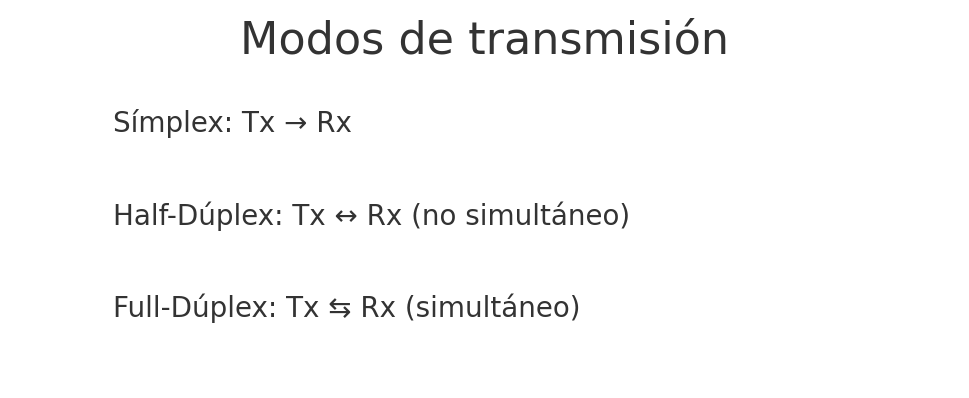
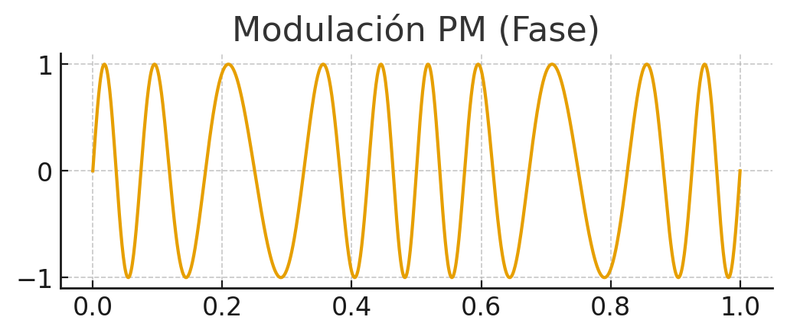

Redes de área local¶
Aquí puedes encontrar los apuntes y actividades del módulo 0225 de Redes de área local del CFGM de Sistemas Microinformáticos y Redes (SMR), cuyo currículo viene fijado por el Real Decreto 1691/2007, impartido en el IES Macià Abela de Crevillente.
Competencias profesionales¶
Las Competencias profesionales asociadas al módulo Redes de área local:
- (d) Replantear el cableado y la electrónica de redes locales en pequeños entornos y su conexión con redes de área extensa canalizando a un nivel superior los supuestos que así lo requieran.
- (e) Instalar y configurar redes locales cableadas, inalámbricas o mixtas y su conexión a redes públicas, asegurando su funcionamiento en condiciones de calidad y seguridad.
- (f) Instalar, configurar y mantener servicios multiusuario, aplicaciones y dispositivos compartidos en un entorno de red local, atendiendo a las necesidades y requerimientos especificados.
- (g) Realizar las pruebas funcionales en sistemas microinformáticos y redes locales, localizando y diagnosticando disfunciones, para comprobar y ajustar su funcionamiento.
- (h) Mantener sistemas microinformáticos y redes locales, sustituyendo, actualizando y ajustando sus componentes, para asegurar el rendimiento del sistema en condiciones de calidad y seguridad.
Objetivos generales¶
Los objetivos generales correspondientes son:
Objetivos generales vinculados al módulo Redes de área local (0225):
- (d) Representar la posición de los equipos, líneas de transmisión y demás elementos de una red local, analizando la morfología, condiciones y características del despliegue, para replantear el cableado y la electrónica de la red.
- (e) Ubicar y fijar equipos, líneas, canalizaciones y demás elementos de una red local cableada, inalámbrica o mixta, aplicando procedimientos de montaje y protocolos de calidad y seguridad, para instalar y configurar redes locales.
- (f) Interconectar equipos informáticos, dispositivos de red local y de conexión con redes de área extensa, ejecutando los procedimientos para instalar y configurar redes locales.
- (g) Localizar y reparar averías y disfunciones en los componentes físicos y lógicos para mantener sistemas microinformáticos y redes locales.
- (h) Sustituir y ajustar componentes físicos y lógicos para mantener sistemas microinformáticos y redes locales.
Resultados de aprendizaje¶
Los Resultados de Aprendizaje del módulo Redes de área local (0225) son:
| Código | Descripción | Peso (%) |
|---|---|---|
| RA1 | Reconoce la estructura de redes locales cableadas analizando las características de entornos de aplicación y describiendo la funcionalidad de sus componentes. | 15 |
| RA2 | Despliega el cableado de una red local interpretando especificaciones y aplicando técnicas de montaje. | 15 |
| RA3 | Interconecta equipos en redes locales cableadas describiendo estándares de cableado y aplicando técnicas de montaje de conectores. | 20 |
| RA4 | Instala equipos en red, describiendo sus prestaciones y aplicando técnicas de montaje. | 20 |
| RA5 | Mantiene una red local interpretando recomendaciones de los fabricantes de hardware o software y estableciendo la relación entre disfunciones y sus causas. | 15 |
| RA6 | Cumple las normas de prevención de riesgos laborales y de protección ambiental, identificando los riesgos asociados, las medidas y equipos para prevenirlos. | 15 |
Unidades de Trabajo¶
A partir de los RA, hemos definido 7 unidades de trabajo (UT).
El módulo de Redes de área local viene fijado con una carga lectiva de 233 h, repartidas en 7 sesiones semanales, a lo largo de 32 semanas. Este curso se ha planificado sobre un total de 28 semanas, dejando las últimas 10 semanas para el desarrollo, por parte del alumnado, del programa formativo dual en la empresa. Estas 28 semanas hacen un total de 196 horas lectivas.
A continuación, en la siguiente tabla y a modo de mapa general, se muestran las diferentes UT y los RA que cubren, indicando la carga horaria empleada durante el presente curso en cada una de ellas:
| Unidades de Trabajo | RA1 | RA2 | RA3 | RA4 | RA5 | RA6 |
|---|---|---|---|---|---|---|
| 1. Introducción a las redes | X | |||||
| 2. Arquitecturas de redes | X | |||||
| 3. Capa física | X | X | X | |||
| 4. Sistemas de Cableado estructurado | X | X | X | |||
| 5. Capa de Enlace | X | X | X | |||
| 6. Capa de red | X | X | X | |||
| 7. Enrutamiento, Subnetting y VLANs | X | X | ||||
| 8. Capa de transporte | X | X | ||||
| 9. NAT y Protocolo IPv6 | X | X | ||||
| 10. Capa de aplicación | X | X | ||||
| 11. Resolución de conflictos en una red local | X | X | ||||
| 12. Protección, vigilancia y soporte de redes | X | X | ||||
| Total - 233 h Porcentaje |
X 15% |
X 15% |
X 20% |
X 20% |
X 15% |
X 15% |
timeline
title Planificación temporal - Redes de Área Local
section 1ª Evaluación
Introducción : 1.- Introducción a las redes : 2.- Arquitecturas de redes
Capa física : 3.- Capa física : 4.- Sistemas de Cableado estructurado
section 2ª Evaluación
Enlace : 5.- Capa de Enlace
Red : 6.- Capa de red: 7.- Enrutamiento, Subnetting y VLANs
Transporte : 8.- Capa de transporte
section 3ª Evaluación
Transporte: NAT/IPv6 : 9.- NAT y Protocolo IPv6
Aplicaci√≥n : 10.- Capa de aplicaci√≥n: 11.- Resoluci√≥n de conflictos en una red local: 12.- Protecci√≥n, vigilancia y soporte de redesEvaluaci√≥n¶
Para la evaluación del módulo de Redes de área local se ponderarán los resultados de aprendizaje respecto a los porcentajes indicados en el apartado anterior.
Para la evaluación de cada RA, emplearemos diferentes Instrumentos de Evaluación (IE), como pueden ser:
- Actividades de enseñanza/aprendizaje, normalmente realizadas en el aula, acompañadas de una rúbrica. Distinguiremos las actividades de clase ( AC), las cuales se calificarán normalmente sobre una escala de 3 puntos, de las actividades de refuerzo ( AR), también sobre 3 puntos para consolidar uno o varios CE no conseguidos, así como actividades de profundización ( AP) que aportarán puntos extra al RA.
- Prácticas ( PR) o trabajo de investigación ( TI), con una carga temporal variable, entre una semana o toda una unidad didáctica. Normalmente calificados sobre 10 puntos.
- Proyectos ( PY), bien de desarrollo individual o en parejas, sobre un determinado RA. Normalmente calificados sobre 30 puntos.
- Pruebas objetivas ( PO). En algunos RA, y no de forma generalizada, se realizará una prueba objetiva (ya sea escrita o en ordenador). Normalmente calificados sobre 30 puntos.
Para calcular la calificación de cada resultado de aprendizaje, se realizará la media ponderada simple de los diferentes instrumentos de evaluación empleados en dicho RA, para comprobar que se han cubierto todos los criterios de evaluación.
Todas las calificaciones, tanto de los instrumentos de evaluación como de los propios RA, se podrán consultar en todo momento en la plataforma Aules del curso.
Materiales¶
A lo largo del curso, iremos trabajando diferentes materiales disponibles en este espacio web.
Cada una de las UT comenzará con un resumen de la Propuesta Didáctica que se plantea, los elementos que va a cubrir, tanto el RA a trabajar como sus criterios de evaluación (CE) asociados, así como un cuestionario inicial para reflexionar sobre nuestro conocimiento previo.
En la parte final de cada sesión, además de diferentes recursos de Referencia para ampliar conocimientos, se plantean una serie de Actividades que iremos trabajando en su mayor medida en el aula. Cada una de las actividades indica el RA que cubre, los CE que trabaja, así como su calificación, la cual luego se verá reflejada en la rúbrica de la entrega de dicha tarea en Aules. Además, las actividades están codificadas con el prefijo del tipo de instrumento de evaluación, así como la unidad que cubren (por ejemplo, la actividad AC207 será la 7ª actividad de clase de la unidad 2).
Respecto a los recursos tecnológicos, aunque inicialmente trabajaremos con papel y lápiz, luego pasaremos a utilizar el programa excalidraw para diseño de escenarios de redes, y simuladores como packetracer y GNS3.
üåê Introducci√≥n a las Redes¶
üìö Propuesta didáctica¶
En esta unidad vamos a comenzar a trabajar el RA1 de RAL:
RA1. Reconoce la estructura de redes locales cableadas analizando las características de entornos de aplicación y describiendo la funcionalidad de sus componentes.
Criterios de evaluaci√≥n¶
Criterios de evaluaci√≥n del RA1¶
- CE1a: Se han descrito los principios de funcionamiento de las redes locales.
- CE1b: Se han identificado los distintos tipos de redes.
- CE1c: Se han descrito los elementos de la red local y su función.
- CE1d: Se han identificado y clasificado los medios de transmisión.
- CE1e: Se ha reconocido el mapa físico de la red local.
- CE1f: Se han reconocido las distintas topologías de red.
- CE1g: Se han identificado estructuras alternativas.
Contenidos¶
Redes de Comunicaciones:
- Sistemas en red: tipos, componentes y topologías.
- Transmisión de datos: medios, tipos, técnicas y perturbaciones.
Interpretación de conceptos clave:
- Tipos de redes: PAN, LAN, MAN, WAN.
- Componentes hardware y software: nodos, adaptadores, medios.
- Topologías cableadas e inalámbricas.
- Medios guiados e inalámbricos.
- Tipos de transmisión: naturaleza, señales simultáneas, dirección.
- Técnicas de transmisión: digital, analógica.
- Perturbaciones: atenuación, distorsión, ruido.
Cuestionario inicial
- ¿Qué tipos de redes conoces según su extensión?
- ¿Qué diferencia hay entre una red pública y una privada?
- ¿Qué función tiene un switch en una red local?
- ¿Qué ventajas ofrece la fibra óptica frente al par trenzado?
- ¿Qué es una topología en estrella? ¿Dónde se suele usar?
- ¿Qué papel juega el sistema operativo de red (NOS)?
- ¿Qué relación existe entre los nodos finales e intermedios?
- ¿Qué diferencia hay entre transmisión serie y paralela?
- ¿Qué tipos de transmisión existen según la dirección?
- ¿Qué ventajas tiene la transmisión digital frente a la analógica?
- ¿Qué tipos de ruido afectan a la transmisión de datos?
Programaci√≥n de Aula (12h)¶
Esta unidad se imparte en la primera evaluación, con una duración estimada de 12 sesiones lectivas, durante la última quincena de septiembre:
| Sesión | Contenidos | Actividades | Criterios trabajados |
|---|---|---|---|
| 1 | Introducción redes: tipos, componentes y topologías | Cuestionario inicial (1-7) | CE6a, CE6b, CE6c y CE6d |
| 2 | Práctica Mapa físico Empresa ficticia | PR101 | CE7a, CE7c, y CE7e |
| 3 | Introducción a la transmisión de datos: analógica y digital | AC102 | CE7a, CE7c, y CE7e |
üîó Sistemas en red¶
Según indica Tanenbaum, en su libro Redes de Computadoras, un sistema de red hace referencia al conjunto de equipos electrónicos y medios de transmisión que realizan el proceso de comunicación entre terminales informáticos, que normalmente están situados en puntos remotos.

La unión de estos sistemas forma las denominadas Redes de Comunicaciones, cuya clasificación se explica siguiendo diferentes factores, entre los cuales destacan: alcance geográfico y ámbito de propiedad (público y privado).
‚öôÔ∏è Componentes¶
Un sistema en red se compone de elementos hardware y software.
Componentes Hardware¶
Nodos en una red¶
Los nodos son dispositivos encargados de enviar y recibir la información en el proceso de comunicación de sistemas en red, y se dividen en:
Nodos finales¶
Son cualquier dispositivo de red que comienza o termina una comunicación; también se denominan Data Terminal Equipment (DTE).
Los más habituales son:
- Estaciones de trabajo (workstations).
- Servidores.
Nodos intermedios¶
También conocidos como Data Circuit-Terminating Equipment (DCE), son aquellos dispositivos que participan en la comunicación entre nodos finales.
Destacan los siguientes DCEs:
- Repetidores: Se encargan de amplificar y rectificar la señal. Son dispositivos de capa 1 (física) del modelo OSI (Open System Interconnection).
- Switches: Conectan equipos en la misma red local. Se caracterizan por su mecanismo de autoaprendizaje que relaciona la dirección MAC de un dispositivo con el puerto/interfaz del switch donde está conectado. Son dispositivos de capa 2 (enlace) del modelo OSI.
- Routers: Su principal objetivo es comunicar redes distintas. También destacan características como asignación de IPs dinámicamente (DHCP), balanceo de carga y traducción de IPs (NAT). Operan en la capa 3 (red).
- Firewalls: Además de enrutar, tienen funciones en las capas superiores del modelo OSI, como el control de sesiones para analizar paquetes y detectar amenazas de intrusión en los sistemas de red.

Adaptadores de red¶
El adaptador de red (NIC) permite la conexión del equipo a la red. Se clasifica por:
- Tipo de interfaz: cableadas (par trenzado, coaxial, fibra óptica) o inalámbricas.
- Modo de transmisión: Half-duplex (un sentido), Full-duplex (ambos sentidos simultáneamente).
- Velocidad de transmisión: medida en Mbps o Gbps.
Medios de transmisi√≥n¶
El medio de transmisión es el soporte físico que facilita el transporte de la información; influye directamente en el rendimiento y prestaciones de la red.
A continuación, se describen los tipos y sus principales características:
| TIPOS | CLASIFICACIÓN INTERNA | CARACTERÍSTICAS PRINCIPALES Y USOS |
|---|---|---|
| GUIADOS CABLEADOS | Par trenzado | Consiste en grupos de hilos de cobre aislados y entrelazados entre sí, para anular las interferencias externas e internas. Se destaca su uso en cableado estructurado en edificios. Tipos: UTP (interiores) y FTP (exteriores). |
| Coaxial | Consta de tres capas: núcleo de cobre (vivo), aislante plástico y malla conductora. Usado en TV, CCTV y despliegues de tele-cable locales. | |
| Fibra óptica | Núcleo de vidrio o silicio que transmite luz. Revestido y protegido externamente. Muy extendido en hogares gracias a la tecnología GPON (Gigabit-capable Passive Optical Network). | |
| INALÁMBRICOS | Antenas | Transmiten señales electromagnéticas entre emisor y receptor. Características clave: potencia y frecuencia. Tipos: radioenlaces (4G), puntos de acceso WiFi para redes locales sin cables. |
Componentes Software¶
Todos los dispositivos activos de la red deben ejecutar operaciones informáticas avanzadas para cumplir con los protocolos de red, por lo que deben tener un software de red. Es decir, es el conjunto de programas y ficheros de configuración que permiten la comunicación entre elementos de una red.
Los podemos dividir en dos:
- NOS (Network Operating System): software que gestiona la comunicación y la pila de protocolos.
- Drivers: software específico para gestionar adaptadores de red.
¿Qué es un protocolo?
Son un conjunto de reglas que se establecen entre el transmisor y receptor de un proceso de comunicación que permite asegurar la transmisión de datos entre los dos extremos. *Ejemplo*: protocolo IP (dicta las reglas para las direcciones IP).
üóÇÔ∏è Clasificaci√≥n¶
üìè Tipos según su extensi√≥n¶
Las redes se clasifican según su extensión en los siguientes tipos:
-
PAN (Personal Area Network): Comprenden el entorno del usuario y los dispositivos con los que interactúa. Se trata de redes inalámbricas cuyo radio de acción es de unos pocos metros. *Ejemplo*s: Bluetooth o NFC (pago en datáfono mediante móvil).
-
LAN (Local Area Network, redes de área local): Son redes pequeñas que proporcionan servicios a usuarios dentro de una estructura común, que suele ser una empresa, una casa o un campus. Es el tipo de red más conocido. *Ejemplo*: la red utilizada frecuentemente en nuestras casas mediante WIFI.
Cuando la LAN emplea medios inalámbricos se denomina WLAN. -
MAN (Metropolitan Area Network): Son varias redes LAN interconectadas en distancias cortas (unos pocos kilómetros). *Ejemplo*: Las sucursales de una empresa en la misma ciudad o en ciudades próximas.
-
WAN (Wide Area Network, redes de área extensa): Son varias redes LAN interconectadas a distancias largas (hasta miles de kilómetros). *Ejemplo*s: Sucursales de una empresa en varias ciudades. Internet es un Ejemplo de red WAN.

üåç Tipos según su ámbito¶
Clasificaci√≥n de redes según su titularidad¶
La titularidad de la red puede servir para clasificar las redes como públicas y privadas. A continuación, se detallan ambos tipos:
-
Públicas: Brindan servicios de telecomunicaciones a cualquier usuario que pague una cuota, normalmente contratada a una empresa Internet Service Provider (ISP).
Podríamos incluir a Internet en este tipo de redes. -
Privadas: Son las redes que pertenecen a una propiedad, empresa o particular, y normalmente están adecuadas a sus necesidades.
Dentro de este tipo de redes cabe destacar la tecnología VPN (Virtual Private Network), la cual permite una extensión segura de la red de área local (LAN) sobre una red pública o no controlada como Internet, mediante el cifrado de la información con el protocolo IPsec.
En la siguiente figura se muestra un esquema explicativo de esta tecnología.
- Para completar la clasificación de las redes se recomienda la lectura del profesor Marcos Ruiz: Clasificación de las redes
üìä Topolog√≠as¶
La topología de red es la distribución espacial de los elementos conectados.
Topolog√≠as cableadas¶
Inicialmente, las topologías cableadas realizadas eran en forma de bus, actualmente en desuso, por presentar altas interferencias entre nodos.
Los principales tipos son:

Topolog√≠as inalámbricas¶
Son las topologías que están unidas mediante medios de transmisión inalámbricos. Entre estas tecnologías destacan los despliegues realizados de puntos de acceso WIFI.
En la siguiente tabla se observa su clasificación:
- Además, se recomienda la lectura de la parte final de Clasificación de las redes
üì° Transmisi√≥n y perturbaciones¶
- Transmisión: es el proceso de enviar datos de un punto a otro a través de un medio (cable, fibra, ondas de radio, etc.).
- Perturbación: son los problemas o interferencias que pueden afectar a la señal durante su viaje y hacer que llegue distorsionada o con errores.
En este bloque vamos a profundizar en cómo se transmiten los datos en una red, qué tipos de transmisión existen, qué técnicas se utilizan y qué problemas pueden aparecer durante la comunicación.
üîÑ Tipos de transmisi√≥n¶
Los tipos de transmisión se clasifican en función de distintos criterios: la naturaleza de la señal, el número de señales transmitidas y la dirección de la comunicación.
Según la naturaleza de la se√±al¶
- Transmisión analógica
- Señal continua en el tiempo.
- Se caracteriza por su amplitud, frecuencia y fase.
- Ejemplo: voz en una línea telefónica.
- Inconveniente: más sensible al ruido.
Onda continua.

- Transmisión digital
- Señal discreta (0 y 1).
- Más robusta frente a interferencias.
- Ejemplo: datos en Ethernet o WiFi.
- Inconveniente: necesita convertir la señal analógica a digital.
Onda cuadrada binaria.

Según el número de se√±ales simultáneas¶
- Serie
- Los bits viajan uno detrás de otro por una única línea.
- Adecuado para largas distancias y simplifica el cableado.
- Ejemplo: comunicaciones por puerto serial, USB, enlaces Ethernet (a nivel lógico).
Transmisión en serie: los bits viajan uno tras otro.

- Paralelo
- Varios bits se transmiten al mismo tiempo por diferentes conductores.
- Adecuado para cortas distancias debido a problemas de sincronización y diafonía.
- Ejemplo: antiguos buses de impresora, conexiones internas de PC.
Transmisión en paralelo: varios bits viajan al mismo tiempo.

Según la direcci√≥n de transmisi√≥n¶
-
Símplex
- Comunicación en un solo sentido: emisor → receptor.
- Ejemplo: emisión de TV por antena. -
Half-Dúplex
- Ambos extremos pueden transmitir, pero no simultáneamente.
- Ejemplo: walkie-talkies; redes que usan un solo canal compartido. -
Full-Dúplex
- Transmisión simultánea en ambos sentidos.
- Ejemplo: llamadas por teléfono, enlaces Ethernet modernos.
Modos de transmisión: símplex, half-dúplex y full-dúplex.

üîß T√©cnicas de transmisi√≥n¶
Las técnicas de transmisión permiten adaptar los datos al medio físico. Podemos distinguir dos grandes grupos: digital y analógica.
Transmisi√≥n digital¶
Se basa en codificación de línea (cómo se representan los 0 y 1 en la forma de la señal).
- NRZ (No Return to Zero)
- Representa 1 por un nivel alto y 0 por un nivel bajo, sin retorno al cero entre bits.
- Problema: largas secuencias de 0 o de 1 dificultan la sincronización.
Codificación NRZ.

- Manchester
- Cada bit tiene una transición en la mitad del periodo: garantiza sincronización.
- Consume más ancho de banda, pero facilita la detección de bordes.
Codificación Manchester.

Transmisi√≥n anal√≥gica¶
Se usa una onda portadora (sinusoidal) y se modifica alguna de sus propiedades para transmitir la información.
- AM / ASK (Amplitud) — la amplitud de la portadora varía según la señal.
Modulación en amplitud.

- FM / FSK (Frecuencia) — la frecuencia de la portadora cambia para representar datos.
Modulación en frecuencia.

- PM / PSK (Fase) — se modula la fase de la portadora (muy usada en sistemas digitales sobre portadora analógica).
Modulación en fase.

‚ö†Ô∏è Perturbaciones en la transmisi√≥n¶
El medio de transmisión no es perfecto. La señal puede degradarse y llegar al receptor con errores. Los principales problemas son:
Atenuaci√≥n¶
- Pérdida de energía de la señal conforme avanza por el medio.
- Causas: resistencia eléctrica, dispersión en fibras, pérdidas por conectorización mal hecha.
- Soluciones: repetidores, amplificadores, uso de medios con menor pérdida (fibra óptica).
Distorsi√≥n¶
- La señal se deforma porque diferentes componentes de frecuencia viajan a distintas velocidades (dispersión).
- Impacto: borrado de los pulsos o superposición entre símbolos (ISI — inter-symbol interference).
- Soluciones: ecualización, uso de codificaciones y filtros adecuados.
Ruido¶
Interferencia aleatoria que se suma a la señal original y puede provocar errores. Tipos frecuentes:
- Ruido térmico: debido a la agitación térmica de los electrones dentro del conductor. Se distribuye uniformemente por todo el espectro de frecuencias, se le conoce como ruido blanco y no puede eliminarse.
- Intermodulación: señales no deseadas con la misma frecuencia que la original compartiendo el mismo medio, provocan una suma o diferencia en esa frecuencia contaminando la señal original.
- Diafonía: los conductores o líneas de transmisión próximos producen una acoplamiento entre los mismos debido al campo electromagnético que generan.
- Ruido impulsivo: ruido no continuo que consiste en pulsos irregulares poca duración (varios segundos), causado por perturbaciones electromagnéticas externas. como picos breves de tensión producidos por motores, relés o descargas atmosféricas.
Soluciones: apantallamiento, pares trenzados, filtrado, corrección de errores (FEC), aislamiento y buenas prácticas de instalación.
Ejemplo práctico:
cables de red sin buena separación pueden sufrir diafonía si se colocan paralelos a cables eléctricos; la solución pasa por canalizaciones, separación y/o usar cable apantallado (FTP/STP).
üìã Resumen visual¶
| Criterio | Tipos | Ejemplo |
|---|---|---|
| Naturaleza | Analógica / Digital | Radio FM / Ethernet |
| Nº señales | Serie / Paralelo | USB / Bus impresora |
| Dirección | Símplex / Half / Full | TV / Walkie / Móvil |
| Digital | NRZ, Manchester, Dif. Man. | Ethernet |
| Analógica | AM, FM, PM | Radio, Módems, WiFi |
| Perturbación | Atenuación, Distorsión, Ruido | Pérdidas / Interferencias |
üõ†Ô∏è Actividades¶
Formato de entrega
Para la entrega de las actividades, Genera un documento con la práctica descrita a continuación. Deberás crear un archivo PDF con el siguiente formato de nombre: PRXXX.pdf o ACXXX.pdf, donde las X representan el número de la actividad. Una vez finalizada la práctica, sube el archivo a Aules (antes de la fecha de vencimiento) para su calificación.
- PR101. (RA.7 // CE7a, CE7c, y CE7e // 1-10p). Como futuros técnicos en Sistemas Microinformáticos y Redes, el alumnado debe aprender a planificar y documentar redes locales. En esta actividad, debéis diseñar el esquema físico y lógico de una empresa ficticia usando Excalidraw, trabajando en equipo para elegir la topología, los dispositivos y los medios adecuados. El objetivo es simular un caso real, fomentando la colaboración y la justificación técnica de cada decisión. Realizar en grupos un documento de presentación y exponerlo en clase. A continuación, se detallan las premisas de la práctica:
üè¢Escenario
- Empresa ficticia TechSolutions con:
- 3 departamentos: Administración, Ventas y Soporte.
- Cada uno con 5 PCs y 1 impresora.
- 1 servidor central.
- Conexión a Internet mediante router.
üßë‚Äçü§ù‚ÄçüßëTareas del grupo
- Elegir una topología adecuada (estrella, árbol, híbrida).
- Diseñar el esquema de red en Excalidraw:
- Añadir iconos de PCs, switches, router, servidor, impresoras.
- Conectar con flechas y etiquetar enlaces (UTP, fibra, Wi-Fi).
- Justificar en el diagrama:
- ¿Por qué esa topología? Ventajas y desventajas.
- ¿Por qué esos medios? Ventajas y desventajas.
- ¿Por qué esos componentes? Ventajas y desventajas.
- Exposición breve (5 min).
üß∞ Herramientas
- Excalidraw
- Aules
üìãCriterios de evaluaci√≥n
Cada grupo evaluará el trabajo de otro equipo. Puntúa cada criterio según la escala indicada. Total: 30 puntos.
| Criterio | Descripción | Puntos |
|---|---|---|
| Claridad del diagrama | El esquema es legible, bien organizado y fácil de interpretar. | 0-6 |
| Identificación de dispositivos | Incluye todos los elementos necesarios (PCs, switches, router, etc.) | 0-6 |
| Representación de conexiones | Las conexiones están correctamente etiquetadas (UTP, fibra, Wi-Fi). | 0-4 |
| Topología adecuada | La topología elegida es coherente con el escenario planteado. | 0-4 |
| Justificación técnica | Explica por qué se eligieron la topología y los medios. | 0-6 |
| Creatividad y presentación | Uso de iconos, colores y organización visual atractiva. | 0-4 |
Total: /30 puntos
üßÆRúbrica de coevaluaci√≥n
| Criterio | Descripción | Rango de puntos | Nivel bajo (0-2) | Nivel medio (3-4) | Nivel alto (5-6 / 3-4) |
|---|---|---|---|---|---|
| Claridad del diagrama | El esquema es legible, bien organizado y fácil de interpretar. | 0–6 | Confuso o ilegible. Mala organización. |
Aceptable pero mejorable. Se entiende con esfuerzo. |
Muy claro, bien estructurado y fácil de seguir. |
| Identificación de dispositivos | Incluye todos los elementos necesarios (PCs, switches, router, etc.) | 0–6 | Faltan varios dispositivos clave. | La mayoría están presentes, pero hay omisiones. | Todos los dispositivos necesarios están correctamente representados. |
| Representación de conexiones | Las conexiones están correctamente etiquetadas (UTP, fibra, Wi-Fi). | 0–4 | Conexiones ausentes o mal representadas. | Algunas conexiones correctas, pero con errores o sin etiquetas. | Todas las conexiones están correctamente representadas y etiquetadas. |
| Topología adecuada | La topología elegida es coherente con el escenario planteado. | 0–4 | No definida o incoherente. | Tiene errores o no se ajusta bien al escenario. | Coherente y adecuada al planteamiento. |
| Justificación técnica | Explica por qué se eligieron la topología y los medios. | 0–6 | Sin justificación o incorrecta. | Justificación aceptable pero incompleta. | Justificación clara, coherente y bien argumentada. |
| Creatividad y presentación | Uso de iconos, colores y organización visual atractiva. | 0–4 | Presentación pobre o sin elementos visuales. | Básica, con poco esfuerzo visual. | Cuidada, con elementos visuales que mejoran la comprensión. |
Puedes apoyarte en esta guía: GUÍA EXCALIDRAW
- AC102. (RA.1 // CE1a, CE1c y CE1d // 1-3p). Identifica y documenta ejemplos reales de transmisión de datos y perturbaciones en redes locales, aplicando los conceptos vistos en clase.
üìù Instrucciones
- Busca ejemplos reales de los siguientes conceptos:
- Tipos de transmisión: analógica, digital, serie, paralelo, simplex, half-dúplex, full-dúplex.
- Técnicas de transmisión: NRZ, Manchester, AM, FM, PM.
- Perturbaciones: atenuación, distorsión, ruido térmico, intermodulación, diafonía, ruido impulsivo.
- Para cada ejemplo, indica:
- Dónde se encuentra (entorno doméstico, empresa, centro educativo, etc.).
- Qué tipo de transmisión o perturbación representa.
- Cómo afecta al funcionamiento de la red.
- Qué solución se aplica o podría aplicarse.
- Presenta tus resultados en un documento con los siguientes elementos:
- Tabla resumen con los ejemplos encontrados.
- Imágenes o esquemas si es posible.
- PR103. (RA.7 // CE7a, CE7c, y CE7e // 1-10p).
Como futuros técnicos en Sistemas Microinformáticos y Redes, el alumnado debe aprender a planificar y simular redes locales.
En esta actividad individual, deberás diseñar y configurar el esquema físico y lógico de una empresa ficticia usando Cisco Packet Tracer, aplicando los conceptos de componentes, topologías y medios de transmisión.
üè¢ Escenario
- Empresa ficticia NetSolutions con:
- 3 departamentos: Administración, Ventas y Soporte.
- Cada uno con 5 PCs y 1 impresora.
- 1 servidor central conectado a toda la red.
- Conexión a Internet mediante un router.
üõ†Ô∏è Tareas
- Elegir una topología adecuada (estrella, árbol, híbrida) y justificarla.
- Diseñar la red en Packet Tracer:
- Añadir PCs, switches, router, servidor e impresoras. .
- Conectar con cables adecuados (UTP, fibra, etc.) y configurar la conectividad. - Justificar en el documento:
- La elección de la topología.
- Los medios de transmisión utilizados.
- Los dispositivos seleccionados.
üß∞ Herramientas
- Cisco Packet Tracer
- Aules
- PR104. RA.1 // CE1a, CE1d, CE1f // 1–10p**
En esta práctica individual, el alumnado debe simular una red local en Cisco Packet Tracer que incluya distintos medios de transmisión (UTP, fibra, Wi-Fi) y analizar cómo afectan las perturbaciones (atenuación, ruido, interferencias) al rendimiento de la red. Se busca aplicar los conceptos teóricos de transmisión de datos en un entorno práctico.
üè¢ Escenario Empresa ficticia DataLink S.L. con:
- 2 plantas: Planta Baja (Administración) y Planta Alta (Desarrollo).
- Cada planta con 4 PCs y 1 impresora.
- 1 servidor central en la sala de servidores (Planta Baja).
- Conexión a Internet mediante router.
- Conexión entre plantas mediante fibra óptica.
- Conexión Wi-Fi para dispositivos móviles en ambas plantas.
üõ†Ô∏è Tareas
- Diseñar la red en Packet Tracer: - Añadir PCs, impresoras, switches, router, servidor y puntos de acceso Wi-Fi. - Conectar con medios adecuados: UTP para PCs, fibra entre switches, Wi-Fi para móviles.
- Simular tráfico de red entre dispositivos usando herramientas de diagnóstico (ping, simulación de paquetes).
- Introducir perturbaciones: - Simular pérdida de conectividad por interferencias Wi-Fi. - Simular degradación por uso de cable UTP largo sin repetidor.
- Documentar: - Justificación de los medios de transmisión elegidos. - Identificación de las perturbaciones simuladas. - Propuesta de soluciones técnicas (uso de repetidores, cambio de canal Wi-Fi, etc.).
üß∞ Herramientas
üåê ARQUITECTURAS DE REDES¶
A finales del siglo XX, Internet revolucionó la forma de trabajar y comunicarnos en nuestro día a día. La base de Internet es la comunicación de ordenadores mediante la conexión de sistemas en red, y en concreto este tema estudia lo modelos y arquitecturas que garantizan la compatibilidad de conexión entre dichos sistemas, permitiendo de este modo el funcionamiento de Internet.
üìö Propuesta didáctica¶
En esta unidad trabajamos el RA1 de RAL:
RA1. Reconoce la estructura de redes locales cableadas analizando las características de entornos de aplicación y describiendo la funcionalidad de sus componentes.
üéØ Criterios de evaluaci√≥n¶
Criterios de evaluaci√≥n del RA1¶
- CE1a: Se han descrito los principios de funcionamiento de las redes locales.
- CE1b: Se han identificado los distintos tipos de redes.
- CE1c: Se han descrito los elementos de la red local y su función.
- CE1d: Se han identificado y clasificado los medios de transmisión.
- CE1e: Se ha reconocido el mapa físico de la red local.
- CE1f: Se han reconocido las distintas topologías de red.
- CE1g: Se han identificado estructuras alternativas.
Contenidos¶
- Normalización en redes: estándares, organismos y tipos.
- Arquitecturas de comunicación: capas, protocolos, modelos OSI y TCP/IP.
- Componentes de red: dispositivos terminales e intermedios.
- Uso del medio: conmutación y difusión.
- Esquemas LAN: red simple, zonas, DMZ.
Cuestionario inicial
- ¿Qué es un modelo de red y para qué sirve?
- ¿Qué diferencias existen entre arquitectura y protocolo en redes?
- ¿Por qué es importante la normalización en las redes?
- ¿Qué organismos internacionales conoces relacionados con la estandarización de redes?
- ¿Qué ventajas aporta el uso de estándares abiertos frente a los propietarios?
- ¿Cuáles son las principales diferencias entre el modelo OSI y el modelo TCP/IP?
- ¿Qué función cumple cada capa en el modelo OSI?
- ¿Qué es una DMZ y para qué se utiliza en una red local?
- ¿Qué diferencias hay entre conmutación y difusión en el uso del medio?
Programaci√≥n de Aula (12h)¶
Esta unidad se imparte en la primera evaluación, con una duración estimada de 12 sesiones lectivas, durante la primera quincena de octubre:
| Sesión | Contenidos | Actividades | Criterios trabajados |
|---|---|---|---|
| 1 | Normalización y estándares, Organismos internacionales | Cuestionario inicial, AC201 | CE1a, CE1b y CE1c |
| 2 | Arquitecturas de comunicación: modelos OSI y TCP/IP | Actividad AC202 | CE1a, CE1d, CE1f |
üìè Normalizaci√≥n¶
Las Redes de comunicaciones han pasado por diferentes fases, El comienzo fue en 1971 cuando se creó la primera red de ordenadores, conocida como ARPANET. En la década de los setenta aparecieron varias redes creadas por diferentes fabricantes.
- Problema: no eran compatibles entre si.
- Solución: Estandarizar las redes.

Modelos, arquitecturas y protocolos¶
Antes de adentrarnos en la estandarización de las redes, es fundamental comprender los conceptos de modelos, arquitecturas y protocolos, ya que constituyen la base sobre la que se construyen los estándares de comunicación.
- Los Modelos determinan la manera en la que se tiene que establecer y producir dicha comunicación. Destacan el modelo OSI (estándar de derecho, propuestos por organismos internacionales) y el TCP/IP (estándar de facto, propuesto por las grandes compañías).
- La Arquitectura de una red se define como el conjunto de niveles y protocolos utilizados para implementar las tareas de comunicación entre equipos informáticos. Esta organización debe ser lo suficientemente clara como para que los fabricantes de software y hardware puedan diseñar sus productos compatibles entre sí.
- Los protocolos pueden definirse como el conjunto de reglas que gobiernan el intercambio de datos entre dos entidades. La comunicación entre diferentes sistemas resulta demasiado compleja para ser gobernada por un único protocolo, por lo que se diseñaron un conjunto de protocolos llamados pilas de protocolos; el ejemplo más destacado es la pila de protocolos del modelo TCP/IP, donde destacan protocolos como DNS, DHCP, TCP, IP, Ethernet.
Estándares y organismos de normalizaci√≥n¶
Un estándar es una regla técnica que se utiliza para que los dispositivos y sistemas informáticos puedan funcionar correctamente entre sí. Por ejemplo, gracias a los estándares, un ordenador puede conectarse a una red, enviar correos o navegar por Internet sin importar la marca o el modelo, el tipo de conector a emplear, las tensiones e intensidades empleadas, el formato de los datos a enviar, etc.
Para definir estos estándares existen los organismos de normalización, que son instituciones encargadas de crear y publicar estas reglas. Gracias a estos organismos, los fabricantes y desarrolladores pueden seguir las mismas normas, lo que facilita que los sistemas funcionen bien juntos y se puedan usar en cualquier parte del mundo.
üåü Ventajas de estandarizar¶
En resumen, El empleo de estos estándares presenta las siguientes ventajas:
- ✅ Los productos de diferentes fabricantes que cumplen los estándares son totalmente compatibles y pueden comunicarse sin necesidad de adaptadores.
- üìà El mercado se ampl√≠a, favoreciendo precios más competitivos y mayor flexibilidad.
- üîÑ Compatibilidad con productos futuros empleando la misma tecnolog√≠a.
- üí∞ Reducci√≥n de costes de los productos.
- ü§ù Se evita que las empresas tengan arquitecturas cerradas, fomentando la interoperabilidad.
üóÇÔ∏è Clasificaci√≥n de los estándares¶
La clasificación de los estándares puede hacerse desde dos enfoques diferentes:
üìè Según su origen¶
| Tipo de estándar | Descripción |
|---|---|
| üìå De facto | Surgen por la aceptaci√≥n del mercado. No son oficiales, pero se usan ampliamente. Normalmente los definen grupos de empresas u organizaciones. |
| üèõÔ∏è De iure | Son estándares oficiales, definidos por organismos de normalizaci√≥n reconocidos como ISO, IEEE, etc. |
üîë Según su propiedad¶
| Tipo de estándar | Descripción |
|---|---|
| üîí Cerrados (propietarios) | Son propiedad de una empresa o corporaci√≥n. Su acceso está restringido. Se usan para fidelizar al cliente. Si se popularizan, pueden convertirse en de facto o incluso en de iure. |
| üîì Abiertos | Son accesibles para cualquier persona u organizaci√≥n. Incluyen tanto los de facto como los de iure. Algunos pueden tener distribuci√≥n restringida (por ejemplo, cobrar por acceder al documento), pero normalmente no exigen canon por su uso. |
üèõÔ∏è Qui√©n define los estándares abiertos¶
Existen dos tipos de organizaciones:
ü§ù Consorcios de fabricantes¶
- Grupos de empresas que cooperan para asegurar la interoperabilidad.
- Beneficios → aumentan el mercado y los clientes potenciales.
- Empresas o personas interesadas pueden unirse y participar en la definición de normas.
- Ejemplos: ADSL Forum, ATM Forum, Zigbee Alliance, PLC Forum.
üìú Organismos oficiales¶
- Formados por consultores independientes, administraciones públicas y otros miembros.
- Ejemplos: ISO, IEEE, ANSI.
üåç Organismos reguladores en el ámbito internacional¶
-
ITU (International Telecommunication Union)
La organización ITU (UIT en castellano, Unión Internacional de Telecomunicaciones) es la organización más importante de las Naciones Unidas en lo que concierne a las tecnologías de la información. Representa un foco global para gobiernos y sector privado en el desarrollo de redes y servicios. Coordina el uso del espectro radioeléctrico, promueve la cooperación internacional para la asignación de órbitas de satélites, mejora infraestructuras de comunicación, establece estándares mundiales para la interconexión de sistemas y afronta problemas como el cambio climático y la ciberseguridad. -
ISO (International Organization for Standardization)
Agencia internacional sin ánimo de lucro con sede en Ginebra (Suiza), cuyo objetivo es el desarrollo de normalizaciones en un amplio abanico de materias. Ha definido multitud de estándares, desde el paso de los tornillos hasta arquitecturas de comunicaciones para la interconexión de sistemas abiertos (OSI).
Está formada por organismos de estandarización de diversos países (ANSI, DIN, AENOR, etc.) y organizaciones observadoras. Fundada en 1946, reúne a más de 100 países. -
IEEE (Institute of Electrical and Electronic Engineers)
Mayor asociación profesional para el avance de la innovación y la excelencia tecnológica. Fundada en 1884, desarrolla estándares para las industrias eléctricas y electrónicas. Destacan los trabajos del comité 802, que desarrolla estándares de protocolos de comunicaciones para la interfaz física de las conexiones de redes locales de datos. -
IETF (Internet Engineering Task Force)
Organización internacional abierta de normalización, creada en EE.UU. en 1986. Regula propuestas y estándares de Internet, conocidos como RFC (Request For Comments). Está compuesta por técnicos y profesionales en el área de redes y se organiza en grupos de trabajo sobre temas concretos.
üá∫üá∏ Organismos reguladores en Estados Unidos¶
-
ANSI (American National Standards Institute)
Organización sin ánimo de lucro encargada de supervisar el desarrollo de estándares aplicados en EE.UU. -
TIA (Telecommunications Industry Association)
Asociación formada por representantes de las industrias más importantes del sector de las telecomunicaciones. Ha desarrollado numerosos estándares a nivel internacional en colaboración con ANSI y la antigua EIA.
üá™üá∫ Organismos reguladores en Europa¶
-
ETSI (European Telecommunications Standards Institute)
Organización independiente sin ánimo de lucro que produce estándares globales para tecnologías de la información y comunicación. Reconocida por la Unión Europea, cuenta con 766 organizaciones miembro de 63 países. Ha estandarizado el sistema de telefonía móvil GSM.
Cuerpos dependientes: 3GPP (redes UMTS), TISPAN (redes fijas y convergencia con Internet). Fundada en 1988. -
CEN (Comité Europeo de Normalización)
Organización no lucrativa privada cuya misión es fomentar la economía europea y el bienestar de los ciudadanos proporcionando una infraestructura eficiente para el desarrollo y distribución de estándares coherentes. Fundada en 1961, sus 29 miembros nacionales desarrollan los estándares europeos (EN).
üá™üá∏ Organismos reguladores en Espa√±a¶
- AENOR (Asociación Española de Normalización)
Organismo nacional de normalización encargado de la publicación de las normas UNE y la adopción de normas europeas. Relacionado con CEN, CENELEC y ETSI.
Arquitecturas de comunicaciones¶
Cuando se diseña una red de ordenadores, es necesario resolver muchos problemas:
- ¿Hay que compartir un único medio de transmisión?
- ¿Cómo distinguimos unos ordenadores de otros?
- ¿Qué tipo de información se va a transmitir?
- ¿Se manejará información confidencial?
La arquitectura de una red viene definida por tres características fundamentales:
- Topología: Organización del cableado, define la configuración básica de la interconexión de estaciones y, en algunos casos, el camino de una transmisión de datos sobre el cable.
- Método de acceso a la red: En redes con medio compartido, es necesario acordar cómo enviar información para evitar colisiones. En redes sin medio compartido, el acceso es trivial.
- Protocolos de comunicaciones: Reglas y procedimientos utilizados para realizar la comunicación, incluyendo corrección de errores, establecimiento de comunicación, etc.
Problemas comunes en el dise√±o de redes¶
- Encaminamiento: Elección de la mejor ruta entre origen y destino.
- Direccionamiento: Mecanismo para que un proceso especifique con quién quiere comunicarse.
- Acceso al medio: Control del orden de transmisión en medios compartidos para evitar colisiones.
- Saturación del receptor: Un emisor rápido puede saturar a un receptor lento; se soluciona con mecanismos de control de flujo.
- Mantenimiento del orden: Algunos protocolos deben reordenar mensajes que llegan desordenados.
- Control de errores: Detección y corrección de errores en la transmisión.
- Multiplexación: Compartición de un único medio de transmisión por varias comunicaciones independientes.
Niveles de las Arquitecturas.¶
Como se comentó al inicio del tema, las redes estaban originalmente ligadas al hardware de cada fabricante. Esto obligaba a desarrollar programas muy extensos y complejos para gestionar la comunicación entre equipos, dificultando la interoperabilidad y el mantenimiento.
La solución a esta problemática fue la reducción de la complejidad mediante un modelo basado en niveles o capas, organizados jerárquicamente y relacionados entre sí. Este enfoque permite una implementación más sencilla, modular y escalable.
üìê Principios del modelo por capas¶
Este modelo se fundamenta en las siguientes premisas:
- üîÅ Jerarqu√≠a funcional: Cada nivel se construye sobre los servicios ofrecidos por el nivel inferior, incorporando la funcionalidad propia de su capa.
- ü§ù Protocolos entre niveles hom√≥logos (peer-to-peer protocols): Permiten optimizar y gestionar cada capa de forma independiente.
- üîÑ Independencia entre capas: Un protocolo puede ser sustituido por otro en una misma capa, siempre que se mantengan los servicios ofrecidos.
üß± Elementos clave del modelo¶
Además de los niveles, es importante conocer los siguientes conceptos:
- Entidades de datos: Conjunto de funciones bien definidas que ejecutan las tareas propias de cada nivel, es decir, sus servicios.
- Interfaz SAP (Service Access Point): Puntos de acceso entre capas que permiten la provisión de servicios e intercambio de información. Actúan como interfaz de comunicación entre niveles.
- Cabecera: Información añadida por cada capa a los datos originales, que incluye parámetros necesarios para realizar sus funciones. Las cabeceras se agregan en el emisor y se eliminan en el receptor.
üì¶ Unidades de Datos de Protocolo (PDU)¶
PDU es la abreviatura de Protocol Data Unit (unidad de datos del protocolo). Su función principal es establecer una comunicación de datos entre capas homologas. Esta forma de establecer conexiones recibe el nombre de comunicación par-a-par.
La primera PDU corresponde a los datos que llegan a la capa de aplicación. Aquí se les añade una cabecera y la PDU pasa al nivel siguiente, el de presentación en el modelo OSI, el de transporte en la arquitectura TCP/IP.
A partir de aquí, y en cada uno de los niveles subsiguientes, a la PDU recibida se le añadirá una cabecera y será enviada al nivel inferior, y así sucesivamente hasta llegar al nivel físico, donde los datos serán enviados como bits.
- PDU: Unidad de datos del protocolo, utilizada para la comunicación entre capas homólogas (comunicación par-a-par).
- En cada capa, la PDU recibe un nombre específico:
- Capa de aplicación: Datos
- Capa de transporte: Segmentos
- Capa de red: Datagramas
- Capa de acceso a la red: Tramas
- Capa física: Flujo de bits
Encapsulación:
Cada capa añade su propia cabecera a la PDU recibida de la capa superior. En el destino, las cabeceras se eliminan en orden inverso.
üîÑ Proceso de comunicaci√≥n entre equipos¶
La comunicación entre dos dispositivos en red se realiza siguiendo el principio de comunicación entre capas homólogas. Este proceso se basa en un flujo de datos que desciende por las capas del modelo en el emisor y asciende por las capas en el receptor.
üì§ En el emisor:¶
- La capa de aplicación (7) genera los datos que se desean transmitir.
- Cada capa inferior añade su propia cabecera (información de control) a los datos recibidos desde la capa superior.
- Este proceso se repite hasta llegar a la capa física (1), que convierte los datos en señales eléctricas, ópticas o inalámbricas para enviarlos por el medio de transmisión.
üì• En el receptor:¶
- La capa física (1) recibe las señales y las convierte nuevamente en datos.
- Cada capa elimina su cabecera y procesa la información que le corresponde.
- Los datos ascienden capa por capa hasta llegar a la capa de aplicación (7), donde se entregan al usuario final o a la aplicación correspondiente.
Este flujo garantiza que cada capa se encargue de una función específica (como direccionamiento, control de errores, cifrado, etc.), y que los datos lleguen correctamente al destino.

Finalmente, cabe señalar que las principales arquitecturas de red se basan en este tipo de modelos, y serán descritas en los apartados siguientes.
CONCLUSIÓN
Los ingenieros de comunicaciones dividieron el proceso de comunicación en capas, facilitando el diseño de protocolos y estándares para redes.
üß± Modelo de referencia OSI y TCP/IP¶
A mediados de los años setenta, la ISO elaboró el modelo OSI (Open Systems Interconnection), un modelo arquitectónico de referencia basado en capas. Aunque su implementación resultó compleja, es fundamental para comprender las arquitecturas de red.
En paralelo, DARPA (Agencia de Proyectos de Investigación Avanzada de Defensa) desarrolló la pila de protocolos TCP/IP, que por su sencillez y visión práctica se convirtió en el estándar de facto en redes de ordenadores.
üì∂ Niveles OSI¶
En 1984 la ISO (International Organization for Standardization) creó el modelo de referencia para la interconexión de sistemas abiertos OSI (Open Systems Interconnection).es un marco conceptual que divide la comunicación de redes en siete capas, cada una con una función específica, para estandarizar la forma en que los sistemas diferentes se comunican a través de protocolos.
Capas del Modelo OSI¶
-
Capa Física
Establece las especificaciones eléctricas, mecánicas y funcionales de todos los equipos y medios físicos que intervienen en el proceso de comunicación.
Hace referencia tanto al medio físico como a los tipos de transmisión (cable, fibra o inalámbrico) y a las técnicas de transmisión de datos (codificación, modulación).- Ejemplo: RS-232
-
Capa de Enlace
Encapsula los paquetes de la capa de red en tramas para transmitirlas del emisor al receptor de forma ordenada, detectando y corrigiendo errores en este proceso.
Además, gestiona:- Direccionamiento físico
- Acceso al medio
- Control de flujo
- Ejemplo: HDLC (High-Level Data Link Control)
- Capa de Red
Encapsula en paquetes los segmentos de la capa de transporte, con el objetivo de enviarlos por diferentes rutas, eligiendo la más adecuada (función principal).
-
Protocolos de la capa de red
- Enrutables: diseñados para dirigir los paquetes hasta su destino, incluso entre puntos remotos.
- Ejemplos: IP, IPX, Appletalk
- De enrutamiento: contienen reglas que permiten identificar y reenviar paquetes a lo largo de una ruta de red.
- Ejemplos: EIGRP, OSPF, RIP, BGP
-
Otros objetivos
- Tratamiento de la congestión
-
Dispositivos de esta capa
- Routers
- Switches de nivel 3 (Cisco series 3k, 4k, 6k y Nexus)
- Algunos firewall
-
Capa de Transporte
Se encarga de preparar la información que se va a transmitir encapsulándola en segmentos, asegurando que llegan al destino:- En el orden correcto
- Con fiabilidad
- Con calidad de servicio
NOTA
Trabaja con puertos lógicospara identificar las conexiones, dando lugar a los. sockets (IP:Puerto)(IP:Puerto) Ejemplos: TP4 y TP0 de OSI
-
Capa de Sesión
Controla, mantiene y establece el enlace que se crea en la capa de transporte entre las dos entidades que se comunican. Asegura que, una vez establecida una sesión, ésta podrá realizar las operaciones previstas de principio a fin, pudiendo reanudarse en caso de interrupción.- Ejemplos: NetBIOS, RPC
-
Capa de Presentación
Da formato a la información que se transmite para que el receptor la interprete correctamente. Puede incluir:- Compresión
- Encriptación
De esta forma, aunque distintos equipos utilicen representaciones internas diferentes de caracteres, los datos llegan de manera reconocible.
- Ejemplo: ASN.1
-
Capa de Aplicación
Proporciona la interfaz de comunicación del usuario con las capas inferiores, lo que conocemos como aplicación.
Es la capa superior de la jerarquía OSI. Un usuario normalmente no interactúa directamente con el nivel de aplicación, sino con programas que usan esta capa, abstrayéndose de la complejidad intrínseca.- Ejemplos: POP, SMTP, FTP, gestores de BBDD
üèóÔ∏è Arquitectura TCP/IP¶
El modelo de referencia OSI es un modelo teórico, sin embargo el modelo TCP/IP nació del caso práctico; concretamente de la red ARPANET (1971). Su nombre viene por las iniciales de sus dos protocolos primarios. La arquitectura TCP/IP está compuesta por 4 capas, descritas a continuación:
Capas del Modelo TCP/IP¶
- Acceso a la red
Engloba las funciones de las capas Física y Enlace del modelo OSI. En el modelo TCP/IP sólo se especifica que esta capa debe ser capaz de conectar el host a la red mediante algún protocolo que permita enviar paquetes IP.
-
Red (IP)
Capa análoga a la de Red del modelo OSI. Es la encargada de las tareas de:- Encaminamiento
- Control de congestión
Su principal protocolo es IP (Internet Protocol):
- Protocolo no orientado a conexión.
- No garantiza la entrega de paquetes ni la recuperación de errores.
- Se encarga del direccionamiento y el enrutado.
Otros protocolos de esta capa:
- ARP
- ICMP
- IGMP
- RARP
-
Transporte (TCP)
Equivalente al nivel de Transporte de OSI.
Se encarga de permitir las comunicaciones extremo a extremo.Protocolos más importantes:
TCP (Transmission Control Protocol):
- Protocolo que ofrece un servicio fiable.
- Confirma la recepción de paquetes.
- Ejemplo de uso: transmisión de archivos.
UDP (User Datagram Protocol):
- Proporciona un servicio no fiable, pero sin latencias.
- Óptimo para aplicaciones como la voz sobre IP (VoIP).
-
Aplicación
Contiene las funciones de las capas de Sesión, Presentación y Aplicación del modelo OSI. Incluye todos los protocolos de alto nivel que se utilizan para ofrecer servicios a los usuarios, como:- Transferencia de ficheros → FTP
- Correo electrónico → SMTP, POP3, IMAP
- Servidor de nombres → DNS
- Web → HTTP, HTTPS
Niveles y equivalencia¶
El modelo OSI describe con detalle las funciones de cada nivel, mientras que TCP/IP agrupa algunas de estas capas para simplificar la arquitectura y adaptarla a la implementación real en redes como ARPANET.
De esta forma:
- La capa de aplicación de TCP/IP reúne las capas de aplicación, presentación y sesión del modelo OSI.
- La capa de transporte mantiene una equivalencia directa en ambos modelos.
- La capa de internet en TCP/IP corresponde con la capa de red en OSI.
- Finalmente, la capa de acceso a la red engloba las capas física y de enlace de OSI.
Esta equivalencia facilita la comprensión y permite mapear protocolos y servicios entre ambas arquitecturas.
| Capa TCP/IP | Capas OSI correspondientes | Función principal |
|---|---|---|
| Aplicación | Aplicación, Presentación, Sesión | Proporciona servicios de red al usuario y formatea los datos para la comunicación entre aplicaciones. Incluye protocolos como HTTP, FTP, SMTP, DNS. |
| Transporte | Transporte | Gestiona la comunicación extremo a extremo, garantiza fiabilidad, orden y control de flujo. Protocolos: TCP, UDP. |
| Internet | Red | Encaminamiento de paquetes entre redes, control de congestión y direccionamiento. Protocolos: IP, ICMP, ARP. |
| Acceso a la red | Enlace de datos, Física | Conecta el host a la red física, maneja la transmisión de tramas, control de errores y acceso al medio. Protocolos: Ethernet, Wi-Fi, PPP, HDLC. |
En la siguiente figura se puede observar la correspondencia comentada entre ambos modelos:

NOTA
La arquitectura TCP/IP es de 4 capas:
üîå Uso del medio en redes¶
La interconexión de los distintos nodos que forman una red puede realizarse de dos formas: por conmutación o por difusión.
üîÄ Conmutaci√≥n¶
Consisten en un conjunto de nodos interconectados entre sí, a través de medios de transmisión (cables), formando la mayoría de las veces una topología mallada o estrella, donde la información se transfiere encaminándola del nodo de origen al nodo destino mediante conmutación entre nodos intermedios.
Es típica de las WAN. Existe una línea dedicada para cada dos nodos. La conmutación a su vez puede ser de circuitos o de paquetes.
üìû Conmutaci√≥n de circuitos¶
Funcionamiento:
- Se establece un único camino entre el origen y el destino para toda la comunicación.
- Cuando un emisor quiere enviar un mensaje a un receptor a través de una red de conmutación de circuitos, lo primero que debe hacerse es el establecimiento del canal, es decir la conexión entre emisor y receptor, que se hace eligiendo un camino concreto de entre todos los posibles que existen.
- La ruta que sigue la información se establece al inicio de la comunicación y se mantiene durante todo el proceso que dure la comunicación, aunque existan algunos tramos de esa ruta que se comparten con otras rutas diferentes.
- Al finalizar la transmisión se produce la liberación del canal.
- La red telefónica clásica es un ejemplo de conmutación de circuitos.
üì¶ Conmutaci√≥n de paquetes¶
Funcionamiento:
- Un nodo que quiere enviar un mensaje a otro lo divide en paquetes.
- Cada paquete se envía por el medio con su información de cabecera.
- En cada nodo intermedio:
- El paquete se detiene el tiempo necesario para procesarlo.
- Se decide el siguiente nodo al que enviarlo.
- El proceso se repite hasta llegar al destino.
- Los paquetes pueden:
- Perderse.
- Llegar en distinto orden.
- Los distintos paquetes de un mismo mensaje pueden seguir caminos distintos hasta su destino.
- Ejemplo: Internet es un caso de conmutación de paquetes.
- En una red conmutada:
- Los equipos finales son ordenadores personales.
- Los equipos intermedios son routers.

üì° Difusi√≥n¶
Funcionamiento:
-
En un medio compartido:
- El emisor envía la información a todos los nodos.
- El nodo receptor reconoce que es para él y la recoge.
- Los otros nodos la dejan pasar.
-
Topologías que utilizan este tipo de redes:
- Bus
- Anillo
- Basadas en ondas de radio
Características de este tipo de redes:
- No existen nodos intermedios de conmutación.
- Todos los nodos comparten un medio de transmisión común.
- La información transmitida por un nodo es conocida por todos los demás.
- El destinatario es quien selecciona y capta la información.
-
Uso típico en:
- Algunas intranets
- Comunicaciones inalámbricas omnidireccionales
-
Ejemplo de red de difusión:
- Equipos finales: ordenadores personales
- Medio: bus compartido
- No existen nodos de conmutación
Esquemas LAN¶
Las redes de área local (LAN) pueden diseñarse con diferentes esquemas, dependiendo de las necesidades y el nivel de seguridad requerido. A continuación, se describen tres esquemas comunes:
üíª Red local simple¶
Una red local simple conecta todos los dispositivos en una única zona, permitiendo la comunicación directa entre ellos. Este esquema es adecuado para entornos pequeños donde no se requiere una segmentación avanzada ni medidas de seguridad adicionales.

üóÇÔ∏è Red local organizada en 2 zonas¶
Una red local organizada en 2 zonas segmenta la red en dos áreas distintas, lo que permite un mejor control del tráfico y una mayor seguridad. Este esquema es útil en entornos donde se requiere separar diferentes tipos de tráfico o grupos de usuarios.

üõ°Ô∏è Red local con zona de usuarios y Zona DesMilitarizada¶
Una red local con zona de usuarios y Zona DesMilitarizada (DMZ) añade una capa adicional de seguridad al segmentar la red en tres áreas: la zona de usuarios, la DMZ y la red externa (Internet). Este esquema es ideal para organizaciones que necesitan proteger su red interna mientras ofrecen servicios accesibles desde el exterior.

üéØ Objetivo principal¶
Permitir conexiones desde la red interna y externa hacia la DMZ, pero restringir las conexiones desde la DMZ hacia la red interna.
Esto significa que:
- Los hosts en la DMZ pueden ofrecer servicios a la red externa.
- Si un intruso compromete un host en la DMZ, la red interna permanece protegida.
- Para un atacante externo, la DMZ actúa como un callejón sin salida.
üß© Usos comunes¶
La DMZ se utiliza para alojar servidores que deben ser accesibles desde el exterior, como:
- Servidores Web
- Servidores de correo electrónico
- Servidores DNS
üîê Seguridad y control de acceso¶
Las conexiones desde la red externa hacia la DMZ se gestionan mediante:
- Firewalls: Dispositivos que controlan el tráfico entre la red externa y la DMZ, aplicando políticas de seguridad para permitir o bloquear conexiones.
- Sistemas de detección y prevención de intrusiones (IDS/IPS): Monitorean el tráfico en la DMZ para detectar actividades sospechosas y prevenir ataques.
- Port Address Translation (PAT): Permite que múltiples dispositivos en la DMZ compartan una única dirección IP pública, lo que ayuda a ocultar la estructura interna de la red.
üõ†Ô∏è Actividades¶
Formato de entrega
Para la entrega de las actividades, Genera un documento con la práctica descrita a continuación. Deberás crear un archivo PDF con el siguiente formato de nombre: PRXXX.pdf o ACXXX.pdf , donde las X representan el número de la actividad. Una vez finalizada la práctica, sube el archivo a Aules (antes de la fecha de vencimiento) para su calificación.
- AC201. (RA.1 // CE1a, CE1c // 1-3p). Investiga y documenta los principales organismos de normalización en redes (ISO, IEEE, ITU, IETF, etc.). Elabora una tabla comparativa con sus funciones y estándares más relevantes.
-
AC202. (RA.1 // CE1a, CE1d, CE1f // 1-3p). Realiza un esquema comparativo entre el modelo OSI y el modelo TCP/IP, indicando:
- Las capas de cada modelo y su equivalencia.
- Las funciones principales de cada capa.
- Ejemplos de protocolos utilizados en cada una.
- PR203. (RA.1 // CE1a, CE1c // 1-10p).
Como futuros técnicos en Sistemas Microinformáticos y Redes, el alumnado debe aprender a analizar y comprender los modelos de red TCP/IP y OSI mediante la simulación práctica.
En esta actividad individual, deberás utilizar Cisco Packet Tracer para examinar el tráfico web HTTP y analizar los elementos de la suite de protocolos TCP/IP, aplicando los conceptos teóricos de arquitecturas de red en un entorno práctico.
üè¢ Escenario
- Cliente web: PC con navegador web configurado
- Servidor web: Servidor HTTP con página web disponible
- Red local: Conexión directa entre cliente y servidor
- Protocolos a analizar: HTTP, TCP, IP, Ethernet, DNS, ARP
üõ†Ô∏è Tareas
-
Configurar el modo de simulación en Packet Tracer: - Cambiar del modo tiempo real al modo simulación - Configurar filtros para protocolos específicos (HTTP, DNS, TCP)
-
Examinar tráfico web HTTP: - Generar solicitud web desde cliente a servidor - Analizar el proceso de encapsulamiento en cada capa - Identificar PDU (Unidades de Datos de Protocolo) en cada nivel
-
Analizar suite de protocolos TCP/IP: - Examinar protocolos DNS, TCP, ARP - Comparar información entre capas OSI y TCP/IP - Identificar correspondencias entre ambos modelos
-
Documentar resultados: - Responder a 17 preguntas específicas sobre el análisis - Capturar pantallas de eventos clave - Explicar el proceso de encapsulamiento/desencapsulamiento
üß∞ Herramientas
CAPA F√çSICA¶
En esta unidad estudiaremos la capa física de las redes de datos, que constituye la base fundamental sobre la que se construye toda la comunicación de red. Nos enfocaremos en los diferentes medios de transmisión (cables de cobre, fibra óptica y tecnologías inalámbricas), sus características técnicas, estándares de cableado, conectores y técnicas de montaje.
La capa física es responsable de la transmisión de bits a través del medio físico, convirtiendo los datos digitales en señales eléctricas, ópticas o electromagnéticas. Dominar estos conceptos es esencial para diseñar, instalar y mantener redes locales eficientes y confiables.
Objetivos de la unidad
• Identificar y clasificar los diferentes medios de transmisión
• Comprender los estándares de cableado y terminaciones
• Aplicar técnicas de montaje de conectores y equipos
• Diseñar sistemas de cableado estructurado
• Evaluar la idoneidad de cada medio según el entorno
üîß INFRAESTRUCTURA DE RED¶
La infraestructura de red comprende todos los elementos físicos y lógicos necesarios para establecer la conectividad entre dispositivos en una red local. Esta infraestructura incluye los medios de transmisión, los equipos de interconexión, las estructuras de cableado y los estándares que garantizan la interoperabilidad y el rendimiento óptimo del sistema.
En esta unidad analizaremos los componentes fundamentales de la infraestructura:
Componentes de la infraestructura
üåê Medios de transmisi√≥n: Canales f√≠sicos que transportan la informaci√≥n
üîå Conectores y terminaciones: Interfaces entre medios y equipos
üèóÔ∏è Cableado estructurado: Organizaci√≥n jerárquica del cableado en edificios
üì° Tecnolog√≠as inalámbricas: Comunicaci√≥n sin medios f√≠sicos
⚙️ Equipos de red: Dispositivos que gestionan el tráfico de datos
La correcta planificación e implementación de la infraestructura es crucial para garantizar la escalabilidad, mantenibilidad y rendimiento de la red, cumpliendo con estándares internacionales como ISO/IEC 11801 y TIA/EIA-568.
üìö Propuesta didáctica¶
En esta unidad trabajamos los RA2, RA3 y RA4 de RAL:
RA2. Despliega el cableado de una red local interpretando especificaciones y aplicando técnicas de montaje.
RA3. Interconecta equipos en redes locales cableadas describiendo estándares de cableado y aplicando técnicas de montaje de conectores.
RA4. Instala equipos en red, describiendo sus prestaciones y aplicando técnicas de montaje.
üéØ Criterios de evaluaci√≥n¶
Criterios de evaluaci√≥n del RA2¶
CE2a: Interpreta las especificaciones del cableado de una red local analizando los requisitos técnicos y aplicando estándares de cableado estructurado.
CE2b: Identifica los componentes del sistema de cableado reconociendo medios de transmisión, conectores y equipos de distribución.
CE2c: Aplica técnicas de montaje del cableado siguiendo procedimientos de instalación y cumpliendo normativas de seguridad.
CE2d: Verifica el funcionamiento del cableado instalado utilizando herramientas de medición y pruebas de conectividad.
Criterios de evaluaci√≥n del RA3¶
CE3a: Describe los estándares de cableado para redes locales identificando las normas TIA/EIA-568 y categorías de cable.
CE3b: Identifica los tipos de conectores y su uso analizando conectores RJ, de fibra óptica y coaxiales.
CE3c: Aplica técnicas de montaje de conectores realizando terminaciones T568A/T568B y crimpado de conectores.
CE3d: Verifica la conectividad de los equipos interconectados realizando pruebas de continuidad y funcionamiento.
Criterios de evaluaci√≥n del RA4¶
CE4a: Describe las prestaciones de los equipos de red analizando características técnicas de switches, routers y puntos de acceso.
CE4b: Identifica los componentes de los equipos de red reconociendo interfaces, fuentes de alimentación y sistemas de ventilación.
CE4c: Aplica técnicas de montaje de equipos de red instalando en racks y cumpliendo estándares de cableado.
CE4d: Verifica el funcionamiento de los equipos instalados realizando pruebas de conectividad y configuración básica.
Contenidos¶
- Medios de transmisión: guiados y no guiados.
- Cable de par trenzado: categorías, conectores y terminaciones.
- Cable coaxial: tipos y conectores.
- Fibra óptica: tipos, características y conectores.
- Medios inalámbricos: espectro electromagnético y estándares.
- Cableado estructurado en edificios.
Cuestionario inicial
- ¿Qué categorías de cable de par trenzado conoces y para qué se utilizan?
- ¿Cuándo es recomendable usar fibra óptica en lugar de cable de cobre?
- ¿Qué diferencias hay entre los medios guiados y no guiados?
- ¿Qué es el espectro electromagnético y por qué es importante en comunicaciones?
- ¿Cuáles son los principales estándares inalámbricos IEEE 802.11?
- ¿Qué elementos componen un sistema de cableado estructurado?
- ¿Cómo se organiza el cableado horizontal y vertical en un edificio?
- ¿Qué tipos de conectores se utilizan para cable de par trenzado?
- ¿Cómo se realiza la terminación de cables según los estándares T568A y T568B?
Programaci√≥n de Aula (15h)¶
Esta unidad se imparte en la primera evaluación, con una duración estimada de 15 sesiones lectivas:
| Sesión | Contenidos | Actividades | Criterios trabajados |
|---|---|---|---|
| 1-2 | Medios guiados: par trenzado | Cuestionario inicial, AC301 | CE2a, CE2b, CE3a, CE3b |
| 3-5 | Medios guiados: coaxial y fibra óptica | Actividad AC302, práctica PR303 | CE2a, CE2b, CE3a, CE3b |
| 6-8 | Medios no guiados y estándares inalámbricos | Actividad AC304 | CE4a, CE4b |
| 9-10 | Cableado estructurado en edificios | Actividad AC305 | CE2a, CE2b, CE2c, CE2d |
| 11-12 | Práctica: Armado de latiguillo y montaje de roseta | PR306, PR307 | CE3a, CE3b, CE3c, CE3d |
| 13-15 | Repaso y evaluación | Evaluación práctica | Todos los criterios |
üì° Medios de transmisi√≥n¶
La información se transmite en las redes mediante señales, que pueden ser de naturaleza eléctrica, óptica o radiofrecuencia, a través de un medio de transmisión.
Este medio es el enlace que existe entre las dos entidades que se comunican y, entre otros factores, el éxito en la comunicación dependerá de su naturaleza y limitaciones. Por ello, es importante conocer las características de los principales medios de transmisión.
üîå Medios guiados¶
Los medios guiados son los cables que interconectan los equipos. A través de ellos se emite información en forma de señales eléctricas u ópticas. Los principales medios guiados en redes de datos son los que veremos a continuación.
üì∂ Cable de par trenzado¶
Este cable tiene una cubierta de PVC y en su interior contiene ocho cables más pequeños, de diferente color. Para aumentar la potencia del cable y reducir las interferencias, los cables se presentan trenzados por pares (de ahí su nombre), con un total de cuatro pares.
La combinación de colores de los cables interiores no es trivial, sino que debe ser la siguiente:
- Par 1: Azul – Blanco/Azul
- Par 2: Naranja – Blanco/Naranja
- Par 3: Verde – Blanco/Verde
- Par 4: Marrón – Blanco/Marrón
Este tipo de cable se encuentra normalizado según el estándar TIA/EIA-568-B, que define, entre otros aspectos, las diferentes categorías de este cable en función a sus prestaciones. Las categorías más representativas en redes de datos son las siguientes:
| Categoría | Ancho de banda | Aplicaciones |
|---|---|---|
| Cat. 3 | 16 MHz | Redes Ethernet de bajas prestaciones (obsoleto) |
| Cat. 4 | 20 MHz | Redes Token Ring de hasta 16 Mbps (obsoleto) |
| Cat. 5 | 100 MHz | Redes Ethernet de hasta 100 Mbps (obsoleto) |
| Cat. 5e | 100 MHz | Redes Ethernet de hasta 1000 Mbps (1 Gbps) |
| Cat. 6 | 250 MHz | Redes Ethernet de hasta 1 Gbps a 100m, 10 Gbps a 37m |
| Cat. 6a | 500 MHz | Redes Ethernet de hasta 10 Gbps a 100m |
| Cat. 7 | 600 MHz | Redes Ethernet de hasta 10 Gbps (no estándar TIA/EIA) |
| Cat. 7a | 1000 MHz | Redes Ethernet de hasta 10 Gbps (no estándar TIA/EIA) |
| Cat. 8 | 2000 MHz | Redes Ethernet de hasta 25/40 Gbps a 30m (2016) |
Estado actual del cableado (2025)
En la actualidad, para instalaciones de redes de datos, se utiliza principalmente:
- Categoría 5e: Para instalaciones básicas de hasta 1 Gbps
- Categoría 6: Para instalaciones estándar de hasta 1 Gbps con posibilidad de 10 Gbps
- Categoría 6a: Para instalaciones de alto rendimiento con 10 Gbps garantizado
- Categoría 8: Para centros de datos y aplicaciones de muy alto rendimiento (25/40 Gbps)
Las categorías 3, 4 y 5 están prácticamente obsoletas en nuevas instalaciones.
üîß Tipos de cable según el blindaje¶
üîå Cable UTP (Unshielded Twisted Pair)¶
El cable UTP es el tipo más común de cable de par trenzado utilizado en redes locales. Su nombre significa "cable de par trenzado sin apantallar" y presenta las siguientes características:
✅ Ventajas:
- Bajo coste: Es la opción más económica
- Fácil instalación: Flexible y manejable
- Prestaciones adecuadas: Suficiente para la mayoría de aplicaciones
- Compatibilidad: Ampliamente soportado
⚠️ Limitaciones:
- Interferencias electromagnéticas: Vulnerable a ruido eléctrico
- Distancias limitadas: Restricciones en entornos con mucha actividad electromagnética
- Sin protección: No tiene blindaje contra interferencias externas
üèóÔ∏è Estructura: Como ya mencionamos, el cable UTP está compuesto por:
- Cuatro pares de hilos trenzados entre sí
- Recubrimiento exterior de PVC para protección
- Sin blindaje metálico (de ahí el nombre "unshielded")
A partir del cable UTP estándar, y en función de qué parte de este se blinde frente a las interferencias, tenemos las siguientes variaciones:
| Tipo de cable | En el par | En el cable | Uso principal |
|---|---|---|---|
| U/UTP | Sin blindaje | Sin blindaje | Redes domésticas y oficinas pequeñas |
| U/FTP | Pantalla de aluminio | Sin blindaje | Entornos con interferencias moderadas |
| F/UTP | Sin blindaje | Pantalla de aluminio | Oficinas y edificios comerciales |
| F/FTP | Pantalla de aluminio | Pantalla de aluminio | Entornos industriales con alta interferencia |
| S/UTP | Sin blindaje | Malla de aluminio | Aplicaciones críticas y centros de datos |
| S/FTP | Pantalla de aluminio | Malla de aluminio | Entornos electromagnéticamente hostiles |
| SF/UTP | Pantalla de aluminio | Malla + pantalla de aluminio | Aplicaciones militares e industriales |

üîå Conectores para el cable de par trenzado
El cable de par trenzado utiliza conectores tipo RJ (Registered Jack), diseñados específicamente para la conexión de equipos en redes de datos y telefonía.
üìã Tipos de conectores RJ:
Los conectores RJ se clasifican según dos parámetros:
- Posiciones: Número total de ranuras disponibles
- Contactos: Número de conectores metálicos que se utilizan
Los conectores más utilizados en redes de datos son:
Conector RJ-9:
- Es el más pequeño de los conectores RJ
- Se utiliza para conectar los auriculares del teléfono
- Es un conector 4P4C
Conector RJ-11:
- Es un conector dedicado mayoritariamente a la telefonía analógica
- Tiene seis posiciones sobre las que se asientan dos contactos (6P2C)
- Su uso principal es conectar el terminal a la red
- La variante del RJ-11 que emplea un par de contactos más (6P4C) se llama RJ-14

Conector RJ-45:
- Es el conector empleado para cable de par trenzado en redes Ethernet
- Es del tipo 8P8C, lo que significa que utiliza todas sus posiciones para recibir los cuatro pares del cable
- Este conector también soporta el uso de menos pares, dando lugar a las variantes 8P6C, 8P4C y 8P2C, casi todas dedicadas a telefonía o líneas RDSI
- El conector RJ-45 puede ser o no apantallado. Si lo es, por encima de la carcasa plástica tiene un armazón que lo protege de interferencias
- Este tipo de conectores suelen utilizarse con cableado que tenga algún tipo de blindaje

üìã Terminaciones del cable
La posición de los cables en el conector, llamada de forma técnica terminación, está regulada en la norma TIA/EIA-568-B. Esta norma define dos terminaciones:

NOTA IMPORTANTE
Según la norma, la terminación a emplear para la mayor parte del tendido de cableado de la red debería ser T568A. Sin embargo, debido a que típicamente se ha usado la terminación T568B (definida en normas anteriores), muchas instalaciones de redes siguen empleando dicha terminación en lugar de la T568A.
Con estas terminaciones pueden crearse dos tipos de cable:
- Cable directo: utiliza la misma terminación en los dos extremos. Este cable es el que se usa para la mayoría de las conexiones en la red.

- Cable cruzado: utiliza diferente terminación en los dos extremos. Este cable se utiliza para conectar directamente dos equipos.

CONSEJO
Para recordar las diferencias entre T568A y T568B: en T568B, los pares 2 y 3 están intercambiados respecto a T568A.
üì° Cable coaxial¶
El cable coaxial está compuesto por dos conductores concéntricos que comparten el mismo eje. Su estructura consta de:
- Conductor central: Hilo de cobre sólido o hilos trenzados de cobre
- Dieléctrico: Capa aislante de material dieléctrico (generalmente polietileno)
- Pantalla conductora: Malla de hilos de cobre o aluminio que actúa como conductor exterior
- Cubierta exterior: Material aislante protector (habitualmente PVC)
Características del cable coaxial
Este tipo de cable es más resistente que el cable de par trenzado a las interferencias electromagnéticas y presenta menor atenuación de señal, lo que lo convierte en una opción eficiente para grandes distancias. Sin embargo, en redes locales modernas su uso se ha reducido significativamente debido a la obsolescencia de las topologías de bus.
üìä Ventajas y desventajas¶
✅ Ventajas:
- Mayor resistencia a interferencias electromagnéticas
- Menor atenuación de señal (pérdida mínima)
- Eficiente para transmisiones a grandes distancias
- Mayor ancho de banda disponible
❌ Desventajas:
- Mayor coste económico que el cable de par trenzado
- Instalación más compleja y costosa
- Aplicaciones limitadas en redes modernas
- Mayor grosor y menor flexibilidad
üìä Tipos de cable coaxial¶
De toda la familia de cables coaxiales, los más extendidos en el ámbito de las telecomunicaciones son:

üîå Conectores para el cable coaxial¶
La gama de conectores para cable coaxial es muy amplia, ya que este tipo de cable se utiliza mucho en la industria.
- Estos conectores se llaman RF y tienen diferentes formas: rectos, en ángulo, en T, etc.
- Los conectores RF pueden ser macho o hembra. Los conectores macho tienen un capuchón en su extremo que se utiliza para enganchar con el conector hembra.
Principalmente hay tres maneras de engancharlos:
- Anclaje: es la más común. El capuchón conector del macho se engancha en las ranuras del conector hembra.
- Rosca: el conector hembra tiene un paso de roscas sobre el que se enrosca el capuchón del conector macho.
- Presión: el capuchón del conector macho se acopla sobre el conector hembra. Típico en la conexión de la antena de TV.
Además de los conectores, en las redes con topología de bus se utiliza un elemento en los extremos del bus llamado terminador. Este conector no es más que un tapón con una resistencia en su interior para amortiguar las señales cuando llegan al final del bus, e impedir rebotes que pudieran causar interferencias.
Los principales tipos de conector para cable coaxial son:
- BNC: Conectores macho y hembra disponibles - Redes Ethernet 10BASE2 (obsoleto)
- N: Conectores macho y hembra disponibles - Aplicaciones de alta frecuencia
- TNC: Conectores macho y hembra disponibles - Versión roscada del BNC
- SMA: Conectores macho y hembra disponibles - Aplicaciones de microondas
En la siguiente imagen se muestran los diferentes tipos de conectores coaxiales mencionados:

üî¨ Fibra √≥ptica¶
La fibra óptica es un medio de transmisión basado en un hilo extremadamente fino (aproximadamente del grosor de un cabello humano) fabricado en vidrio o plástico de alta pureza. Su estructura consta de:
- Núcleo central: donde se propaga la luz
- Revestimiento primario: sustancia protectora (generalmente acrilato) que recubre directamente la fibra
- Revestimiento secundario: capa exterior que proporciona rigidez y protección contra curvaturas excesivas (típicamente nailon o poliéster)
Principio de funcionamiento:
La fibra óptica transmite información utilizando luz que se propaga a través del núcleo mediante el fenómeno de reflexión total interna. La luz se inyecta en un extremo del cable y rebota en las paredes del núcleo hasta llegar al extremo opuesto, manteniéndose confinada gracias a la diferencia de índices de refracción entre el núcleo y el revestimiento.
Características destacadas:
Este medio presenta pérdidas de señal extremadamente bajas en largas distancias y ofrece una capacidad de transmisión muy elevada, lo que lo convierte en la opción ideal para cubrir grandes distancias. Un ejemplo notable son las redes transoceánicas que conectan continentes mediante extensas redes de cables submarinos de fibra óptica.
üåä Cable submarino de fibra √≥ptica¶
Destacando la importancia de este medio como infraestructura fundamental para las comunicaciones internacionales. Estas redes interconectan continentes y permiten la transmisión de grandes volúmenes de datos a alta velocidad y con mínima atenuación, haciendo posible la conectividad mundial moderna.
A continuación, se presenta una visualización estática de la red global de cables submarinos de fibra óptica, seguida de un enlace interactivo que permite explorar en tiempo real la infraestructura mundial de comunicaciones submarinas:

üó∫Ô∏è MAPA INTERACTIVO
üí° Instrucciones de uso:
- Haz clic en el botón superior para abrir el mapa en una nueva pestaña
- Explora las rutas de cables submarinos haciendo zoom y desplazándote por el mapa
- Selecciona cualquier cable para ver información detallada (longitud, capacidad, empresas propietarias)
- Identifica los puntos de amarre y las rutas que conectan España con otros continentes
Estos cables submarinos de fibra óptica constituyen la columna vertebral de las comunicaciones globales modernas, formando una red intercontinental que conecta todos los continentes habitados del planeta.
üìä DATO CLAVE:
Recorriendo miles de kilómetros por las profundidades oceánicas, estos cables transportan más del 99% del tráfico de datos internacional
Aplicaciones críticas que dependen de esta infraestructura:
- üìû Comunicaciones telef√≥nicas: Llamadas internacionales y servicios de voz
- üåê Internet global: Navegaci√≥n web, streaming y servicios en la nube
- üí∞ Transacciones financieras: Operaciones bancarias y mercados internacionales
- üèõÔ∏è Comunicaciones gubernamentales: Diplomacia y seguridad nacional
- üì∫ Medios de comunicaci√≥n: Distribuci√≥n de contenido audiovisual global
Características técnicas destacadas:
- Longitud total: Más de 1.3 millones de kilómetros de cables submarinos en funcionamiento
- Profundidad: Instalados a profundidades de hasta 8.000 metros bajo el nivel del mar
- Capacidad: Cada cable puede transportar terabits de datos por segundo
- Durabilidad: Diseñados para operar durante 25 años en condiciones extremas
Impacto económico cuantificable:
- Valor de mercado: La industria de cables submarinos mueve más de 15.000 millones de dólares anuales
- Dependencia crítica: Más del 99% del tráfico de datos internacional transita por estos cables
- Interrupción costosa: Una sola ruptura puede causar pérdidas de millones de dólares por hora
- Inversión continua: Se instalan nuevos cables cada año con inversiones multimillonarias
Ventajas técnicas sobre alternativas:
| Aspecto | Cables Submarinos | Satélites | Diferencias |
|---|---|---|---|
| Latencia | 50-100 ms | 250-600 ms | 5-12x menor |
| Capacidad | Terabits/s | Gigabits/s | 1000x mayor |
| Costo por bit | Muy bajo | Alto | 10-100x menor |
| Durabilidad | 25 años | 10-15 años | Mayor vida útil |
| Mantenimiento | Reparación puntual | Reemplazo completo | Más eficiente |
Consideraciones de seguridad y geopolítica:
La protección física de estos cables es una prioridad estratégica, ya que representan puntos únicos de fallo en las comunicaciones globales. Los gobiernos y empresas implementan:
- Monitoreo constante: Sistemas de vigilancia submarina para detectar interferencias
- Rutas redundantes: Múltiples cables para evitar dependencia de una sola ruta
- Zonas de exclusión: Áreas protegidas alrededor de puntos críticos
- Respuesta rápida: Equipos especializados para reparaciones urgentes
üìä Ventajas y desventajas¶
✅ Ventajas:
- Pérdidas muy bajas a largas distancias
- Alta capacidad de transmisión
- Inmune a interferencias electromagnéticas
- Seguridad en la transmisión (difícil de interceptar)
❌ Desventajas:
- Coste elevado
- Instalación compleja
- Fragilidad del cable
- Necesidad de equipos especializados
üî¨ Tipos de fibra √≥ptica¶
Las trayectorias que se emiten sobre la fibra dan lugar a los dos tipos principales de fibra:

Multimodo (MM):
- Se emiten varios haces de luz con diferentes trayectorias
- El emisor que se utiliza para este tipo de fibra es el diodo LED
- El diámetro del núcleo oscila entre 50 y 63 μm
- Más económico pero con limitaciones de distancia
Monomodo (SM):
- Se emite un haz de luz en una trayectoria única
- Para conseguir este tipo de emisión se utiliza luz láser
- Se reduce el diámetro del núcleo hasta unos 9 μm
- Mayor coste pero mejor rendimiento a largas distancias
üèóÔ∏è Estructura de los cables de fibra √≥ptica
Los cables de fibra óptica se clasifican según su diseño estructural en dos tipos principales:

üì¶ Cable de estructura holgada (Loose-tube)¶
Aplicación: Interiores y exteriores de edificios
Características:
- Compuesto por varios tubos de 2-3 mm de diámetro
- Cada tubo contiene múltiples fibras en su interior
- El interior del tubo puede estar relleno de gel hidrófugo para protección
- El núcleo del cable incorpora un elemento de refuerzo (varilla de acero, hilos de aramida, etc.)
- Mayor flexibilidad y resistencia a la tensión
- Ideal para instalaciones subterráneas y aéreas
üéØ Cable de estructura ajustada (Tight-buffered)¶
Aplicación: Principalmente para interiores de edificios
Características:
- Compuesto por una o varias fibras individuales
- Cada fibra posee su propio recubrimiento protector
- Integración en un cuerpo dieléctrico central
- Recubrimiento exterior de fibras de aramida
- Protección plástica final
- Mayor facilidad de instalación en espacios reducidos
- Menor resistencia a la tensión que la estructura holgada
üìä Clasificaci√≥n según estándares¶
La fibra óptica se encuentra estandarizada en la norma TIA/EIA-568-C, que define los siguientes tipos:
| Tipo de fibra | Descripción | Diámetro del núcleo | Diámetro del revestimiento | Máxima distancia |
|---|---|---|---|---|
| OM1 | MM | 62,5 μm | 125 μm | 33 m (1 Gbps), 275 m (100 Mbps) |
| OM2 | MM | 50 μm | 125 μm | 82 m (1 Gbps), 550 m (100 Mbps) |
| OM3 | MM optimizada para láser | 50 μm | 125 μm | 300 m (10 Gbps), 1000 m (1 Gbps) |
| OM4 | MM optimizada para láser | 50 μm | 125 μm | 400 m (10 Gbps), 1000 m (1 Gbps) |
| OS1 | SM | 9 μm | 125 μm | 10 km+ (1 Gbps), 40 km+ (100 Mbps) |
üìè Distancias y velocidades¶
En función de la distancia a cubrir y la velocidad de transmisión deseada, se utiliza un tipo de fibra u otro:
| Velocidad | 300 m | 500 m | 1000 m | 2000 m |
|---|---|---|---|---|
| 100 Mbps | OM1 | OM1 | OM1 | OS1 |
| 1 Gbps | OM1 | OM2 | OM3/OM4 | OS1 |
| 10 Gbps | OM3 | OM4 | OS1 | OS1 |
üîå Conectores para la fibra √≥ptica¶
Los conectores de fibra óptica también son variados. Sirven para los dos tipos de fibra (SM y MM) y pueden conectarse mediante mecanismos de anclaje, enroscado, presión o el sistema del conector RJ, con pestaña para engancharse al conector hembra.
Los principales tipos de conector para fibra óptica que podemos encontrar en redes son:

üì° Medios no guiados¶
Los medios no guiados transportan ondas electromagnéticas sin el empleo de un conductor físico. Estas ondas se propagan a través del aire, el vacío o el agua, utilizando diferentes frecuencias del espectro electromagnético.
Antes de adentrarnos en las distintas bandas de frecuencia y sus usos en comunicaciones inalámbricas, es importante comprender cómo las ondas electromagnéticas abarcan un amplio espectro que va desde las frecuencias más bajas utilizadas en comunicaciones especiales hasta frecuencias extremadamente elevadas para aplicaciones avanzadas.
La siguiente imagen ilustra el espectro electromagnético, mostrando cómo cada intervalo de frecuencia se destina a diferentes tecnologías y servicios de comunicación, desde la radio y la televisión hasta la telefonía móvil y los sistemas de radar. Visualizar este espectro nos permite entender la variedad y el alcance de los medios no guiados en las telecomunicaciones modernas.
üì° Bandas de frecuencia¶
Las bandas de frecuencia son como "carriles" en una autopista. Cada tecnología inalámbrica (Wi-Fi, móvil, radio) tiene su propio "carril" para evitar interferencias.
¿Por qué es importante?
Imagina que todas las tecnologías usaran la misma frecuencia:
- ❌ La radio interferiría con el Wi-Fi
- ❌ Los móviles bloquearían la televisión
- ❌ Sería un caos total
Solución:
- ✅ Cada tecnología tiene su frecuencia asignada
- ✅ El gobierno controla qué frecuencia usa cada servicio
- ✅ Así todo funciona sin problemas
Ejemplos de frecuencias:
- Radio AM: 530-1600 kHz (frecuencias bajas)
- Radio FM: 88-108 MHz (frecuencias medias)
- Wi-Fi: 2.4 GHz y 5 GHz (frecuencias altas)
- Móvil 4G/5G: 700 MHz - 3.5 GHz
üìë Regulaci√≥n en Espa√±a:¶
La atribución de bandas de frecuencias se recoge en el Cuadro Nacional de Atribución de Frecuencias (CNAF), documento oficial disponible en la página web del Ministerio de Industria, Energía y Turismo. Es importante verificar la compatibilidad de dispositivos entre países, ya que las asignaciones pueden variar según la normativa local.
A continuación se resumen las principales bandas de frecuencia utilizadas en las comunicaciones inalámbricas:
-
Radioondas
Banda Aplicación VLF Comunicaciones en navegación y submarinos LF Radio AM de onda larga MF Radio AM de onda media HF Radio AM de onda corta VHF Radio FM UHF TDT (Televisión Digital Terrestre) -
Microondas
Banda Aplicación SHF Bluetooth y ZigBee (redes WPAN) Comunicaciones con radares Redes WLAN y WiMAX TV por satélite Transmisión telefónica -
Infrarrojos
Banda Aplicación IR Mandos a distancia Sistemas de control domótico Comunicación entre dispositivos -
Banda ISM
Banda Aplicación 2,4 GHz Wi-Fi, Bluetooth 5 GHz Wi-Fi de alta velocidad 868 MHz Dispositivos IoT (Europa) 915 MHz Aplicaciones industriales (América) -
Luz Visible
Banda Aplicación 400-700 nm Comunicaciones ópticas Fibra óptica Láser de comunicación Sistemas Li-Fi Comunicación submarina -
Rayos X/Gamma
Banda Aplicación 10⁻¹⁰ - 10⁻¹² m Comunicaciones espaciales Telescopios espaciales Comunicación interplanetaria Investigación astronómica Sistemas de navegación espacial
üìã Ejemplos prácticos:¶
| Servicio | Banda asignada | ¿Por qué esta banda? |
|---|---|---|
| Radio FM | VHF (88-108 MHz) | Propagación local estable |
| Televisión | UHF (470-862 MHz) | Buena calidad de imagen |
| Wi-Fi | 2.4 GHz / 5 GHz | Balance entre alcance y velocidad |
| Móvil 4G/5G | 700 MHz - 3.5 GHz | Optimizado para datos |
üåê Estándares inalámbricos¶
La gran mayoría de los estándares inalámbricos están desarrollados por el grupo de trabajo IEEE 802 del Instituto de Ingenieros Eléctricos y Electrónicos. Estos estándares definen las especificaciones técnicas para diferentes tipos de redes inalámbricas, garantizando la interoperabilidad entre dispositivos de diferentes fabricantes.
Los estándares IEEE 802 se organizan según el tipo de red y su alcance:
- 802.11: Redes de área local inalámbricas (WLAN)
- 802.15: Redes de área personal inalámbricas (WPAN)
- 802.16: Redes de área metropolitana inalámbricas (WMAN)
- 802.20: Redes de área amplia inalámbricas (WWAN)
üì± Estándar para redes WPAN (IEEE 802.15)¶
El estándar IEEE 802.15 define las especificaciones para redes de área personal inalámbricas (WPAN), diseñadas para comunicaciones de corta distancia entre dispositivos personales. Se divide en varios grupos especializados:
Grupos principales:
-
üîµ IEEE 802.15.1
Bluetooth
Tecnología más extendida para comunicaciones de corta distancia entre dispositivos personales.
-
üì± IEEE 802.15.3
NFC (Near Field Communication)
Tecnología para pagos móviles y transferencia de datos a muy corta distancia.
-
üï∏Ô∏è IEEE 802.15.4
ZigBee
Protocolo para redes de sensores de baja potencia y dispositivos IoT.
Los estándares WPAN (como Bluetooth, NFC o ZigBee) permiten la comunicación inalámbrica eficiente entre dispositivos personales próximos, adaptándose a distintas necesidades del entorno digital cotidiano. A continuación, se describen.
üîµ Bluetooth (IEEE 802.15.1)
Bluetooth es la tecnología que usamos para conectar dispositivos sin cables. Es muy común en nuestros móviles, auriculares, ratones, teclados, etc.
¿Para qué sirve Bluetooth?
- Auriculares: Conectar cascos inalámbricos al móvil
- Ratón y teclado: Conectar periféricos al ordenador
- Altavoces: Conectar altavoces portátiles
- Transferir archivos: Enviar fotos entre móviles
Características principales:
- Distancia: Funciona hasta 10 metros aproximadamente
- Velocidad: Rápido para audio y archivos pequeños
- Consumo: Bajo consumo de batería
- Fácil: Se conecta automáticamente
Tipos de Bluetooth:
- Bluetooth básico: Para auriculares y dispositivos simples
- Bluetooth de baja energía: Para smartwatches y dispositivos que duran mucho con batería
Versiones principales:
-
üì± Bluetooth 1.x
Versión Básica
Característica Especificación Velocidad 1 Mbps Año 1999-2001 Aplicación Datos básicos Limitación Velocidad baja -
⚡ Bluetooth 2.0 + EDR
Enhanced Data Rate
Característica Especificación Velocidad 3 Mbps Año 2004 Mejora Triple velocidad Uso Audio, datos -
üöÄ Bluetooth 3.0 + HS
High Speed
Característica Especificación Velocidad 24 Mbps Año 2009 Tecnología Wi-Fi asistido Aplicación Transferencias grandes -
üîã Bluetooth 4.0
Low Energy (BLE)
Característica Especificación Enfoque Baja energía Año 2010 Aplicación IoT, wearables Ventaja Batería extendida -
üî• Bluetooth 5.0
Mayor Alcance y Velocidad
Característica Especificación Alcance 4x mayor Velocidad 2x mayor Año 2016 Aplicación IoT avanzado -
üìä Evoluci√≥n
Progresión Tecnológica
Aspecto Progresión Velocidad 1 → 3 → 24 Mbps Energía Alta → Baja Alcance Corto → Extendido Uso Datos → IoT
üì± NFC (IEEE 802.15.3)
NFC significa "Near Field Communication" (Comunicación de Campo Cercano). Es la tecnología que usamos para pagar con el móvil o pasar información entre dispositivos.
¿Para qué sirve NFC?
- Pagos móviles: Pagar con el móvil acercándolo al terminal
- Tarjetas de visita: Pasar contactos entre móviles
- Acceso: Abrir puertas o acceder a lugares
- Etiquetas inteligentes: Leer información de etiquetas NFC
Características principales:
- Distancia: Muy corta (1-4 centímetros)
- Velocidad: Rápida para datos pequeños
- Seguridad: Muy segura para pagos
- Fácil: Solo acercar el dispositivo
Ejemplos de uso:
- ✅ Pagar en el supermercado con el móvil
- ✅ Pasar una foto entre móviles tocándolos
- ✅ Leer información de un cartel con NFC
- ✅ Abrir la puerta del trabajo con el móvil
üì∂ Wi-Fi (IEEE 802.11)¶
Wi-Fi es la tecnología que usamos para conectarnos a Internet sin cables en casa, trabajo, cafeterías, etc. Es la forma más común de conectarse a Internet de forma inalámbrica.
¿Qué significa Wi-Fi?
- Wi-Fi = "Wireless Fidelity" (Fidelidad Inalámbrica)
- Permite conectar dispositivos a Internet sin cables
- Funciona mediante ondas de radio (como la radio FM)
¿Por qué es importante?
- Universal: Casi todos los dispositivos tienen Wi-Fi
- Fácil: Se conecta automáticamente cuando está cerca
- Rápido: Permite navegar por Internet a alta velocidad
- Práctico: No necesitas cables para conectarte
Evolución de los estándares Wi-Fi:
-
üì± IEEE 802.11a
Wi-Fi 2 (1999)
Característica Especificación Bandas Solo 5 GHz Velocidad Hasta 54 Mbps Tecnología OFDM, 12 canales Ventaja Menos interferencias -
üì∂ IEEE 802.11g
Wi-Fi 3 (2003)
Característica Especificación Bandas Solo 2,4 GHz Velocidad Hasta 54 Mbps Tecnología OFDM Compatibilidad Con 802.11b -
üì° IEEE 802.11n
Wi-Fi 4 (2009)
Característica Especificación Bandas 2,4 GHz y 5 GHz Velocidad Hasta 600 Mbps Tecnología MIMO, canales 40 MHz Compatibilidad Retrocompatible -
üöÄ IEEE 802.11ac
Wi-Fi 5 (2013)
Característica Especificación Bandas Solo 5 GHz Velocidad Hasta 6,77 Gbps Tecnología MU-MIMO, 160 MHz Modulación 256-QAM -
⚡ IEEE 802.11ax
Wi-Fi 6 (2019)
Característica Especificación Bandas 2,4/5/6 GHz Velocidad Hasta 9,6 Gbps Tecnología OFDMA, TWT Optimización IoT, interferencias -
üî• IEEE 802.11be
Wi-Fi 7 (2024)
Característica Especificación Bandas 2,4/5/6 GHz Velocidad Hasta 46 Gbps Tecnología Multi-Link, 320 MHz Modulación 4096-QAM
üåê WiMAX (IEEE 802.16)¶
WiMAX es una tecnología inalámbrica que permite conexión a Internet de alta velocidad en áreas amplias (ciudades o regiones). Su nombre completo es "Worldwide Interoperability for Microwave Access".
¿Para qué sirve WiMAX?
- Internet rural: Llevar conexión a zonas donde no llega la fibra óptica
- Conexión empresarial: Para empresas que necesitan conexión estable
- Emergencias: Comunicaciones en situaciones de crisis
Características principales:
- Alcance: Puede cubrir hasta 50 km de distancia
- Velocidad: Hasta 75 Mbps (similar a fibra óptica)
- Instalación: Más rápida que tender cables de fibra
Tipos de WiMAX:
WiMAX Fijo:
- Se instala en edificios (como una antena de TV)
- Conexión permanente y estable
- Ideal para casas y empresas
WiMAX Móvil:
- Funciona con dispositivos portátiles
- Permite moverse mientras se mantiene la conexión
- Similar a la conexión móvil 4G
Ventajas:
- ✅ Llega a zonas rurales donde no hay fibra
- ✅ Instalación más rápida que cables
- ✅ Buena velocidad de conexión
Desventajas:
- ❌ Menos extendido que otras tecnologías
- ❌ Puede verse afectado por el clima
- ❌ Requiere antenas especiales
Evolución de los estándares WiMAX:
-
üì° IEEE 802.16
Estándar Original (2001)
Característica Especificación Visión Línea de visión requerida Aplicación Backhaul fijo Tecnología Base para WiMAX Limitación Solo entornos despejados -
üè† IEEE 802.16a
Sin Línea de Visión (2003)
Característica Especificación Visión Sin línea de visión (NLOS) Aplicación Acceso residencial Ventaja Mayor flexibilidad Uso Entornos urbanos -
üîß IEEE 802.16d
WiMAX Fijo (2004)
Característica Especificación Tipo Fijo, estabilización Aplicación WiMAX fijo Estabilidad Alta confiabilidad Instalación Permanente -
üì± IEEE 802.16e
WiMAX Móvil (2005)
Característica Especificación Movilidad Limitada Aplicación WiMAX móvil Handover Entre estaciones Competencia Tecnologías celulares -
üöÄ IEEE 802.16m
4G WiMAX (2011)
Característica Especificación Generación 4G Velocidad Alta velocidad Aplicación Competencia LTE Tecnología Avanzada -
üìä Comparativa
Resumen Evolutivo
Aspecto Progresión Visión LOS → NLOS Movilidad Fijo → Móvil Velocidad Básica → 4G Aplicación Backhaul → Consumo
üì± Redes m√≥viles (WWAN)¶
Las redes móviles son las que usamos en nuestros teléfonos para conectarnos a Internet y hacer llamadas. Han evolucionado mucho desde los primeros teléfonos hasta los actuales.
¿Qué significa cada generación?
- 1G: Los primeros teléfonos móviles (solo voz, muy básicos)
- 2G: Teléfonos digitales (voz + SMS)
- 3G: Primeros smartphones con Internet básico
- 4G: Internet rápido en móviles (como tenemos ahora)
- 5G: Internet súper rápido (el futuro)
¿Por qué es importante el 5G?
El 5G promete ser mucho más rápido que el 4G actual, permitiendo: - Descargar películas en segundos - Jugar online sin retrasos - Conectar muchos más dispositivos a la vez
-
üìû 1G
Primera Generación (1980s)
Característica Especificación Velocidad 2,4 Kb/s Tipo Analógico Aplicación Solo voz Limitación Sin datos -
üì± 2G
Segunda Generación (1990s)
Característica Especificación Velocidad 64 Kb/s Tipo Digital Estándares GSM, CDMA Novedad SMS -
üåê 3G
Tercera Generación (2003)
Característica Especificación Velocidad 2 Mb/s Aplicación Voz + datos Novedad Internet móvil Uso Navegación web -
üöÄ 4G
Cuarta Generación (2009)
Característica Especificación Velocidad 100 Mb/s Tecnología LTE Protocolo IP Aplicación Banda ancha móvil -
⚡ 5G
Quinta Generación (2020s)
Característica Especificación Velocidad 1+ Gb/s Latencia <1 ms IoT Millones dispositivos Aplicación Vehículos autónomos -
üìä Comparativa
Evolución Tecnológica
Aspecto Progresión Velocidad Kb/s → Gb/s Tipo Analógico → Digital Uso Voz → IoT Aplicación Básico → Avanzado
üõ†Ô∏è Actividades¶
Formato de entrega
Para la entrega de las actividades, genera un documento con la práctica descrita a continuación. Deberás crear un archivo PDF con el siguiente formato de nombre: ACXXX.pdf o PRXXX.pdf, donde las X representan el número de la actividad. Una vez finalizada la práctica, sube el archivo a Aules (antes de la fecha de vencimiento) para su calificación.
- AC301. (RA2 // CE2a, CE2b // 1-3p). Investiga y documenta las diferentes categorías de cable de par trenzado. Elabora una tabla comparativa con sus características, velocidades máximas y aplicaciones típicas.
- AC302. (RA2 // CE2a, CE2b // 1-3p). Investiga y documenta las características del cable coaxial utilizado en redes locales. Elabora un informe que incluya:
- Estructura y composición del cable coaxial
- Tipos principales de cable coaxial (RG-59, RG-58, RG-6, etc.) y sus aplicaciones
- Ventajas y desventajas frente a otros medios de transmisión
- Ejemplos de uso en redes de datos actuales y obsoletas
- üéØ Reto Grupal RG303: Crimpado de Cables de Par Trenzado (RA3 // CE3a, CE3b, CE3c, CE3d). Aplica las t√©cnicas de crimpado de conectores RJ-45 en cables de par trenzado, siguiendo los estándares T568A y T568B, y demuestra la calidad del trabajo mediante pruebas de conectividad y presentaci√≥n de resultados ante el resto de grupos.
üìã Ver detalles completos del reto →
- AC304. (RA2 // CE2a, CE2b // 1-3p). Realiza una investigación sobre la fibra óptica como medio de transmisión guiado. Elabora un resumen que incluya:
-
- Principio de funcionamiento de la fibra óptica
- Estructura y tipos principales de fibra óptica (monomodo y multimodo)
- Aplicaciones típicas en redes locales y de área amplia
- Ventajas y desventajas frente a otros medios (cobre, inalámbricos)
- Medidas de seguridad y precauciones en su manipulación
- AC305. (RA2 // CE2a, CE2b // 1-3p). Investiga y documenta los medios de transmisión no guiados utilizados en redes de comunicación. Elabora un informe que incluya:
-
- Definición y ejemplos de medios no guiados (radiofrecuencia, microondas, infrarrojos, satélite, etc.)
- Cuadro comparativo con sus características (alcance, bandas de frecuencia, velocidad, aplicaciones)
- Ventajas y limitaciones de los principales tipos
- Ejemplos reales de uso en redes tanto en interiores como exteriores
-
AC306. (RA2 // CE2a, CE2b // 1-3p). Investiga y elabora una infografía o esquema visual que resuma los medios de transmisión no guiados utilizados en redes de comunicación, centrándote en los siguientes aspectos:
- Clasificación de los medios no guiados (radiofrecuencia, microondas, infrarrojos, luz visible, etc.)
- Ejemplos representativos de cada tipo y sus aplicaciones (Wi-Fi, Bluetooth, LTE/5G, satélite, ZigBee, WiMAX, infrarrojos, etc.)
- Principales estándares técnicos asociados a cada medio (por ejemplo: IEEE 802.11 para Wi-Fi, IEEE 802.15 para Bluetooth/ZigBee, IEEE 802.16 para WiMAX, ITU y 3GPP para tecnologías móviles, etc.)
- Ámbitos de aplicación: redes personales, locales, metropolitanas, de área amplia, etc.
- Puedes complementar con imágenes, iconos y descripciones breves.
-
AC307. (RA2 // CE2a, CE2b // 1-3p). Explora la infraestructura mundial de cables submarinos utilizando la herramienta interactiva Submarine Cable Map y elabora un informe detallado que incluya:
- Análisis geográfico: Identifica y documenta las principales rutas de cables submarinos que conectan España con otros continentes
- Características técnicas: Selecciona 3 cables submarinos específicos y documenta sus características técnicas (longitud, capacidad, año de instalación, empresas propietarias)
- Puntos de amarre: Localiza y describe los principales puntos de amarre en territorio español y su importancia estratégica
- Análisis comparativo: Compara las rutas del Atlántico Norte, Mediterráneo y otras regiones en términos de densidad de cables y capacidad
- Impacto económico: Investiga cómo estos cables afectan a la economía digital española y europea
- Conclusiones: Reflexiona sobre la importancia estratégica de esta infraestructura para las comunicaciones globales
Formato de entrega: Documento PDF con capturas de pantalla de la herramienta interactiva, mapas anotados y análisis detallado de cada punto requerido.